<!DOCTYPE html>
<html lang="zh" dir="ltr"><head><title>Strong spin-photon coupling in silicon｜量子点知识库</title><meta charset="utf-8"/><link rel="preload" href="../index-8c1afe54.css" as="style"/><link rel="preload" href="../prescript-2bfc6315.js" as="script"/><link rel="preconnect" href="https://cdnjs.cloudflare.com" crossorigin="anonymous"/><meta name="viewport" content="width=device-width, initial-scale=1.0"/><meta name="og:site_name" content="量子点百科"/><meta property="og:title" content="Strong spin-photon coupling in silicon｜量子点知识库"/><meta property="og:type" content="website"/><meta name="twitter:card" content="summary_large_image"/><meta name="twitter:title" content="Strong spin-photon coupling in silicon｜量子点知识库"/><meta name="twitter:description" content="硅量子点自旋与超导腔光子的强耦合：自旋–光子接口使远程自旋相干耦合与腔助读出成为可能。"/><meta property="og:description" content="硅量子点自旋与超导腔光子的强耦合：自旋–光子接口使远程自旋相干耦合与腔助读出成为可能。"/><meta property="og:image:alt" content="硅量子点自旋与超导腔光子的强耦合：自旋–光子接口使远程自旋相干耦合与腔助读出成为可能。"/><meta property="og:image" content="https://logfe3.github.io/quantum-wiki/static/og-image.png"/><meta property="og:image:url" content="https://logfe3.github.io/quantum-wiki/static/og-image.png"/><meta name="twitter:image" content="https://logfe3.github.io/quantum-wiki/static/og-image.png"/><meta property="og:image:type" content="image/.png"/><meta property="twitter:domain" content="logfe3.github.io/quantum-wiki"/><meta property="og:url" content="https://logfe3.github.io/quantum-wiki/references/samkharadze-2018"/><meta property="twitter:url" content="https://logfe3.github.io/quantum-wiki/references/samkharadze-2018"/><link rel="icon" href="../static/icon.png"/><meta name="description" content="硅量子点自旋与超导腔光子的强耦合：自旋–光子接口使远程自旋相干耦合与腔助读出成为可能。"/><meta name="generator" content="Quartz"/><script data-wiki-scroll-fix="true">(() => {if (window.__quantumWikiExplorerScrollFix) return;window.__quantumWikiExplorerScrollFix = true;const nativeScrollIntoView = Element.prototype.scrollIntoView;Element.prototype.scrollIntoView = function(options) {const explorer = this.closest?.(".explorer");if (!explorer) return nativeScrollIntoView.call(this, options);const list = explorer.querySelector(".explorer-ul");if (!list) return;const itemRect = this.getBoundingClientRect();const listRect = list.getBoundingClientRect();list.scrollTop += itemRect.top - listRect.top - (list.clientHeight - itemRect.height) / 2;};})()</script><link href="../index-8c1afe54.css" rel="stylesheet" type="text/css" data-persist="true"/><link href="../component-735924e0.css" rel="stylesheet" type="text/css" data-persist="true"/><link href="../component-589c1cea.css" rel="stylesheet" type="text/css" data-persist="true"/><link href="../component-bbc3f7c0.css" rel="stylesheet" type="text/css" data-persist="true"/><link href="../component-2911f5d1.css" rel="stylesheet" type="text/css" data-persist="true"/><link href="../component-53b25b2b.css" rel="stylesheet" type="text/css" data-persist="true"/><link href="../component-c93c6a44.css" rel="stylesheet" type="text/css" data-persist="true"/><link href="../component-8a06014f.css" rel="stylesheet" type="text/css" data-persist="true"/><link href="../component-77d6a441.css" rel="stylesheet" type="text/css" data-persist="true"/><link href="../component-6ee21cee.css" rel="stylesheet" type="text/css" data-persist="true"/><link href="../component-1ea6ad18.css" rel="stylesheet" type="text/css" data-persist="true"/><link href="../component-34bdfded.css" rel="stylesheet" type="text/css" data-persist="true"/><link href="../component-788c9ca3.css" rel="stylesheet" type="text/css" data-persist="true"/><link href="../component-642859cd.css" rel="stylesheet" type="text/css" data-persist="true"/><link href="../component-4abc06bd.css" rel="stylesheet" type="text/css" data-persist="true"/><link href="../component-274a3dfe.css" rel="stylesheet" type="text/css" data-persist="true"/><link href="../component-94cb6c84.css" rel="stylesheet" type="text/css" data-persist="true"/><link href="../static/resource-style-a5c806d2.css" rel="stylesheet" type="text/css" data-persist="true"/><link href="../static/resource-style-6bd36952.css" rel="stylesheet" type="text/css" data-persist="true"/><link href="../static/katex/katex.min.css" rel="stylesheet" type="text/css" data-persist="true"/><link href="../static/resource-style-ed8b38f2.css" rel="stylesheet" type="text/css" data-persist="true"/><script src="../prescript-2bfc6315.js" type="application/javascript" data-persist="true"></script><script type="application/javascript" data-persist="true">const fetchData = fetch("../static/contentIndex.json").then(data => data.json())</script></head><body data-slug="references/samkharadze-2018" data-basepath="/quantum-wiki"><div id="quartz-root" class="page" data-frame="default"><div id="quartz-body"><div class="left sidebar"><h2 class="page-title"><a href="..">量子点百科</a></h2><div class="mobile-only"><div class="spacer"></div></div><div class="flex-component" style="flex-direction: row; flex-wrap: nowrap; gap: 0.5rem;"><div style="flex-grow: 1; flex-shrink: 1; flex-basis: auto; order: 0; align-self: center; justify-self: center;"><div class="search"><button class="search-button" aria-label="搜索" aria-expanded="false"><svg role="img" xmlns="http://www.w3.org/2000/svg" viewBox="0 0 19.9 19.7"><title>Search</title><g class="search-path" fill="none"><path stroke-linecap="square" d="M18.5 18.3l-5.4-5.4"></path><circle cx="8" cy="8" r="7"></circle></g></svg><p>搜索</p></button><div class="search-container"><div class="search-space"><input autocomplete="off" class="search-bar" name="search" type="text" aria-label="搜索内容..." placeholder="搜索内容..."/><div class="search-layout" data-preview="true" data-field-priority="[&quot;title&quot;,&quot;content&quot;,&quot;tags&quot;]"></div></div></div></div></div><div style="flex-grow: 0; flex-shrink: 1; flex-basis: auto; order: 0; align-self: center; justify-self: center;"><button class="darkmode" aria-label="暗色模式"><svg xmlns="http://www.w3.org/2000/svg" xmlns:xlink="http://www.w3.org/1999/xlink" version="1.1" class="dayIcon" x="0px" y="0px" viewBox="0 0 35 35" style="enable-background:new 0 0 35 35" xml:space="preserve" aria-label="暗色模式"><title>暗色模式</title><path d="M6,17.5C6,16.672,5.328,16,4.5,16h-3C0.672,16,0,16.672,0,17.5    S0.672,19,1.5,19h3C5.328,19,6,18.328,6,17.5z M7.5,26c-0.414,0-0.789,0.168-1.061,0.439l-2,2C4.168,28.711,4,29.086,4,29.5    C4,30.328,4.671,31,5.5,31c0.414,0,0.789-0.168,1.06-0.44l2-2C8.832,28.289,9,27.914,9,27.5C9,26.672,8.329,26,7.5,26z M17.5,6    C18.329,6,19,5.328,19,4.5v-3C19,0.672,18.329,0,17.5,0S16,0.672,16,1.5v3C16,5.328,16.671,6,17.5,6z M27.5,9    c0.414,0,0.789-0.168,1.06-0.439l2-2C30.832,6.289,31,5.914,31,5.5C31,4.672,30.329,4,29.5,4c-0.414,0-0.789,0.168-1.061,0.44    l-2,2C26.168,6.711,26,7.086,26,7.5C26,8.328,26.671,9,27.5,9z M6.439,8.561C6.711,8.832,7.086,9,7.5,9C8.328,9,9,8.328,9,7.5    c0-0.414-0.168-0.789-0.439-1.061l-2-2C6.289,4.168,5.914,4,5.5,4C4.672,4,4,4.672,4,5.5c0,0.414,0.168,0.789,0.439,1.06    L6.439,8.561z M33.5,16h-3c-0.828,0-1.5,0.672-1.5,1.5s0.672,1.5,1.5,1.5h3c0.828,0,1.5-0.672,1.5-1.5S34.328,16,33.5,16z     M28.561,26.439C28.289,26.168,27.914,26,27.5,26c-0.828,0-1.5,0.672-1.5,1.5c0,0.414,0.168,0.789,0.439,1.06l2,2    C28.711,30.832,29.086,31,29.5,31c0.828,0,1.5-0.672,1.5-1.5c0-0.414-0.168-0.789-0.439-1.061L28.561,26.439z M17.5,29    c-0.829,0-1.5,0.672-1.5,1.5v3c0,0.828,0.671,1.5,1.5,1.5s1.5-0.672,1.5-1.5v-3C19,29.672,18.329,29,17.5,29z M17.5,7    C11.71,7,7,11.71,7,17.5S11.71,28,17.5,28S28,23.29,28,17.5S23.29,7,17.5,7z M17.5,25c-4.136,0-7.5-3.364-7.5-7.5    c0-4.136,3.364-7.5,7.5-7.5c4.136,0,7.5,3.364,7.5,7.5C25,21.636,21.636,25,17.5,25z"></path></svg><svg xmlns="http://www.w3.org/2000/svg" xmlns:xlink="http://www.w3.org/1999/xlink" version="1.1" class="nightIcon" x="0px" y="0px" viewBox="0 0 100 100" style="enable-background:new 0 0 100 100" xml:space="preserve" aria-label="亮色模式"><title>亮色模式</title><path d="M96.76,66.458c-0.853-0.852-2.15-1.064-3.23-0.534c-6.063,2.991-12.858,4.571-19.655,4.571  C62.022,70.495,50.88,65.88,42.5,57.5C29.043,44.043,25.658,23.536,34.076,6.47c0.532-1.08,0.318-2.379-0.534-3.23  c-0.851-0.852-2.15-1.064-3.23-0.534c-4.918,2.427-9.375,5.619-13.246,9.491c-9.447,9.447-14.65,22.008-14.65,35.369  c0,13.36,5.203,25.921,14.65,35.368s22.008,14.65,35.368,14.65c13.361,0,25.921-5.203,35.369-14.65  c3.872-3.871,7.064-8.328,9.491-13.246C97.826,68.608,97.611,67.309,96.76,66.458z"></path></svg></button></div><div style="flex-grow: 0; flex-shrink: 1; flex-basis: auto; order: 0; align-self: center; justify-self: center;"><button class="readermode" aria-label="阅读模式"><svg xmlns="http://www.w3.org/2000/svg" xmlns:xlink="http://www.w3.org/1999/xlink" version="1.1" class="readerIcon" fill="currentColor" stroke="currentColor" stroke-width="0.2" stroke-linecap="round" stroke-linejoin="round" width="64px" height="64px" viewBox="0 0 24 24" aria-label="阅读模式"><title>阅读模式</title><g transform="translate(-1.8, -1.8) scale(1.15, 1.2)"><path d="M8.9891247,2.5 C10.1384702,2.5 11.2209868,2.96705384 12.0049645,3.76669482 C12.7883914,2.96705384 13.8709081,2.5 15.0202536,2.5 L18.7549359,2.5 C19.1691495,2.5 19.5049359,2.83578644 19.5049359,3.25 L19.5046891,4.004 L21.2546891,4.00457396 C21.6343849,4.00457396 21.9481801,4.28672784 21.9978425,4.6528034 L22.0046891,4.75457396 L22.0046891,20.25 C22.0046891,20.6296958 21.7225353,20.943491 21.3564597,20.9931534 L21.2546891,21 L2.75468914,21 C2.37499337,21 2.06119817,20.7178461 2.01153575,20.3517706 L2.00468914,20.25 L2.00468914,4.75457396 C2.00468914,4.37487819 2.28684302,4.061083 2.65291858,4.01142057 L2.75468914,4.00457396 L4.50368914,4.004 L4.50444233,3.25 C4.50444233,2.87030423 4.78659621,2.55650904 5.15267177,2.50684662 L5.25444233,2.5 L8.9891247,2.5 Z M4.50368914,5.504 L3.50468914,5.504 L3.50468914,19.5 L10.9478955,19.4998273 C10.4513189,18.9207296 9.73864328,18.5588115 8.96709342,18.5065584 L8.77307039,18.5 L5.25444233,18.5 C4.87474657,18.5 4.56095137,18.2178461 4.51128895,17.8517706 L4.50444233,17.75 L4.50368914,5.504 Z M19.5049359,17.75 C19.5049359,18.1642136 19.1691495,18.5 18.7549359,18.5 L15.2363079,18.5 C14.3910149,18.5 13.5994408,18.8724714 13.0614828,19.4998273 L20.5046891,19.5 L20.5046891,5.504 L19.5046891,5.504 L19.5049359,17.75 Z M18.0059359,3.999 L15.0202536,4 L14.8259077,4.00692283 C13.9889509,4.06666544 13.2254227,4.50975805 12.7549359,5.212 L12.7549359,17.777 L12.7782651,17.7601316 C13.4923805,17.2719483 14.3447024,17 15.2363079,17 L18.0059359,16.999 L18.0056891,4.798 L18.0033792,4.75457396 L18.0056891,4.71 L18.0059359,3.999 Z M8.9891247,4 L6.00368914,3.999 L6.00599909,4.75457396 L6.00599909,4.75457396 L6.00368914,4.783 L6.00368914,16.999 L8.77307039,17 C9.57551536,17 10.3461406,17.2202781 11.0128313,17.6202194 L11.2536891,17.776 L11.2536891,5.211 C10.8200889,4.56369974 10.1361548,4.13636104 9.37521067,4.02745763 L9.18347055,4.00692283 L8.9891247,4 Z"></path></g></svg></button></div></div><div class="explorer nav-files-container" data-behavior="collapse" data-collapsed="collapsed" data-savestate="true" data-data-fns="{&quot;order&quot;:[&quot;filter&quot;,&quot;sort&quot;,&quot;map&quot;],&quot;sortFn&quot;:&quot;(a, b) => {\n  const FOLDERS = [\&quot;fundamentals\&quot;, \&quot;materials-devices\&quot;, \&quot;qubit-control\&quot;, \&quot;circuit-qed\&quot;, \&quot;readout-measurement\&quot;, \&quot;scaling-automation\&quot;, \&quot;references\&quot;];\n  const ENTRIES = {\n    \&quot;fundamentals\&quot;: [\&quot;two-dimensional-carrier-gas\&quot;, \&quot;semiconductor-quantum-dot\&quot;, \&quot;constant-interaction-model\&quot;, \&quot;electrochemical-potential\&quot;, \&quot;charging-energy\&quot;, \&quot;zeeman-effect\&quot;, \&quot;spin-orbit-coupling\&quot;, \&quot;hyperfine-interaction\&quot;, \&quot;valley-splitting\&quot;, \&quot;coulomb-blockade\&quot;, \&quot;coulomb-diamond\&quot;, \&quot;double-quantum-dot\&quot;, \&quot;charge-stability-diagram\&quot;, \&quot;tunnel-coupling\&quot;],\n    \&quot;materials-devices\&quot;: [\&quot;gaas-algaas\&quot;, \&quot;silicon-mos\&quot;, \&quot;silicon-sige\&quot;, \&quot;germanium-hut-wire\&quot;, \&quot;strained-germanium\&quot;, \&quot;micromagnet\&quot;, \&quot;interface-defects\&quot;, \&quot;charge-noise\&quot;],\n    \&quot;qubit-control\&quot;: [\&quot;charge-qubit\&quot;, \&quot;single-spin-qubit\&quot;, \&quot;hole-spin-qubit\&quot;, \&quot;singlet-triplet-qubit\&quot;, \&quot;hybrid-qubit\&quot;, \&quot;resonant-exchange-qubit\&quot;, \&quot;flopping-mode-qubit\&quot;, \&quot;exchange-interaction\&quot;, \&quot;exchange-gates\&quot;, \&quot;landau-zener-transition\&quot;, \&quot;lzsm-interference\&quot;, \&quot;photon-assisted-tunneling\&quot;, \&quot;rabi-oscillation\&quot;, \&quot;ramsey-interferometry\&quot;, \&quot;electric-dipole-spin-resonance\&quot;, \&quot;dynamical-decoupling\&quot;, \&quot;geometric-quantum-gate\&quot;, \&quot;pauli-spin-blockade\&quot;, \&quot;spin-initialization\&quot;, \&quot;spin-decoherence\&quot;, \&quot;cnot-gate\&quot;, \&quot;toffoli-gate\&quot;],\n    \&quot;circuit-qed\&quot;: [\&quot;microwave-resonator\&quot;, \&quot;cavity-linewidth\&quot;, \&quot;circuit-quantum-electrodynamics\&quot;, \&quot;jaynes-cummings-model\&quot;, \&quot;strong-coupling\&quot;, \&quot;vacuum-rabi-splitting\&quot;, \&quot;dispersive-shift\&quot;, \&quot;high-impedance-resonator\&quot;, \&quot;squid-array-resonator\&quot;, \&quot;charge-photon-coupling\&quot;, \&quot;spin-photon-coupling\&quot;, \&quot;cavity-mediated-coupling\&quot;, \&quot;floquet-dynamics\&quot;],\n    \&quot;readout-measurement\&quot;: [\&quot;single-electron-transistor\&quot;, \&quot;qpc-charge-sensor\&quot;, \&quot;gate-based-sensing\&quot;, \&quot;rf-reflectometry\&quot;, \&quot;single-shot-readout\&quot;, \&quot;energy-selective-readout\&quot;, \&quot;threshold-independent-readout\&quot;, \&quot;dispersive-readout\&quot;, \&quot;parametric-amplifier\&quot;, \&quot;purcell-filter\&quot;, \&quot;readout-crosstalk\&quot;],\n    \&quot;scaling-automation\&quot;: [\&quot;quantum-dot-array\&quot;, \&quot;virtual-gates\&quot;, \&quot;cross-capacitance-matrix\&quot;, \&quot;flopping-mode-qubit\&quot;, \&quot;automatic-tuning\&quot;, \&quot;charge-state-recognition\&quot;, \&quot;two-dimensional-array\&quot;, \&quot;cryo-electronics\&quot;, \&quot;spin-orbit-torque-control\&quot;]\n  };\n  const top = a.slugSegments.length - 1;\n  const ak = a.slugSegments[top], bk = b.slugSegments[top];\n  if (ak === \&quot;index\&quot;) return -1;\n  if (bk === \&quot;index\&quot;) return 1;\n  if (a.isFolder &amp;&amp; !b.isFolder) return -1;\n  if (!a.isFolder &amp;&amp; b.isFolder) return 1;\n  if (a.isFolder &amp;&amp; b.isFolder) {\n    const ia = FOLDERS.indexOf(ak), ib = FOLDERS.indexOf(bk);\n    if (ia >= 0 &amp;&amp; ib >= 0) return ia - ib;\n    if (ia >= 0) return -1;\n    if (ib >= 0) return 1;\n    return a.displayName.localeCompare(b.displayName, \&quot;zh-CN\&quot;);\n  }\n  const parent = a.slugSegments[top - 1] || \&quot;\&quot;;\n  const list = ENTRIES[parent] || [];\n  const ia = list.indexOf(ak), ib = list.indexOf(bk);\n  if (ia >= 0 &amp;&amp; ib >= 0) return ia - ib;\n  if (ia >= 0) return -1;\n  if (ib >= 0) return 1;\n  return a.displayName.localeCompare(b.displayName, \&quot;zh-CN\&quot;);\n}\n&quot;,&quot;filterFn&quot;:&quot;(node) => {\n  if (node.isFolder) return true;\n  if (node.slugSegments.includes(\&quot;assets\&quot;)) return false;\n  return true;\n}\n&quot;,&quot;mapFn&quot;:&quot;(node) => {\n    return node;\n  }&quot;}"><button type="button" class="explorer-toggle mobile-explorer hide-until-loaded" data-mobile="true" aria-controls="explorer-103" aria-label="探索"><svg xmlns="http://www.w3.org/2000/svg" width="24" height="24" viewBox="0 0 24 24" stroke-width="2" stroke-linecap="round" stroke-linejoin="round" class="lucide-menu"><line x1="4" x2="20" y1="12" y2="12"></line><line x1="4" x2="20" y1="6" y2="6"></line><line x1="4" x2="20" y1="18" y2="18"></line></svg></button><button type="button" class="title-button explorer-toggle desktop-explorer" data-mobile="false" aria-expanded="true"><h2>探索</h2><svg xmlns="http://www.w3.org/2000/svg" width="14" height="14" viewBox="5 8 14 8" fill="none" stroke="currentColor" stroke-width="2" stroke-linecap="round" stroke-linejoin="round" class="fold"><polyline points="6 9 12 15 18 9"></polyline></svg></button><div id="explorer-103" class="explorer-content" aria-expanded="false" role="group"><ul class="explorer-ul overflow" id="list-0"><li class="overflow-end"></li></ul></div><template id="template-file"><li><a href="#" class="nav-file-title tree-item-self"></a></li></template><template id="template-folder"><li><div class="folder-container nav-folder-title tree-item-self"><svg xmlns="http://www.w3.org/2000/svg" width="12" height="12" viewBox="5 8 14 8" fill="none" stroke="currentColor" stroke-width="2" stroke-linecap="round" stroke-linejoin="round" class="folder-icon nav-folder-collapse-indicator collapse-icon"><polyline points="6 9 12 15 18 9"></polyline></svg><div><button class="folder-button"><span class="folder-title"></span></button></div></div><div class="folder-outer"><ul class="content tree-item-children"></ul></div></li></template></div></div><div class="center"><div class="page-header"><div class="popover-hint"><nav class="breadcrumb-container" aria-label="breadcrumbs"><div class="breadcrumb-element"><a href="../">Home</a><p> ❯ </p></div><div class="breadcrumb-element"><a href="../references/">参考文献库</a><p> ❯ </p></div><div class="breadcrumb-element"><a href>Strong spin-photon coupling in silicon</a></div></nav><h1 class="article-title">Strong spin-photon coupling in silicon</h1><p show-comma="false" class="content-meta"><time datetime="2026-09-12T00:00:00.000Z">2026年9月12日</time><span>23分钟阅读</span></p></div></div><article class="popover-hint"><div class="markdown-preview-view markdown-rendered"><div class="entry-lead">硅量子点自旋与超导腔光子的强耦合：自旋–光子接口使远程自旋相干耦合与腔助读出成为可能。</div>
<blockquote class="callout info" data-callout="info">
<div class="callout-title">
                  <div class="callout-icon"></div>
                  <div class="callout-title-inner"><p>文献信息 </p></div>
                  
                </div>
<div class="callout-content">
<p>N. Samkharadze <em>et al.</em>, “Strong spin-photon coupling in silicon”, Science <strong>359</strong>, 1123 (2018).
<a href="https://arxiv.org/abs/1711.02040" class="external external-link">arXiv:1711.02040<svg aria-hidden="true" class="external-icon" style="max-width:0.8em;max-height:0.8em;" viewBox="0 0 512 512"><path d="M320 0H288V64h32 82.7L201.4 265.4 178.7 288 224 333.3l22.6-22.6L448 109.3V192v32h64V192 32 0H480 320zM32 32H0V64 480v32H32 456h32V480 352 320H424v32 96H64V96h96 32V32H160 32z"></path></svg></a> · <a href="https://doi.org/10.1126/science.aar4054" class="external external-link">DOI:10.1126/science.aar4054<svg aria-hidden="true" class="external-icon" style="max-width:0.8em;max-height:0.8em;" viewBox="0 0 512 512"><path d="M320 0H288V64h32 82.7L201.4 265.4 178.7 288 224 333.3l22.6-22.6L448 109.3V192v32h64V192 32 0H480 320zM32 32H0V64 480v32H32 456h32V480 352 320H424v32 96H64V96h96 32V32H160 32z"></path></svg></a>
原文为 arXiv 预印本版本的机器可读转换，公式与图注以原文为准；本页仅作站内索引与全文查阅，引用请以正式出版物为准。</p>
</div>
</blockquote>
<h2 id="全文">全文<a role="anchor" aria-hidden="true" tabindex="-1" data-no-popover="true" href="#全文" class="internal internal-link"><svg width="18" height="18" viewBox="0 0 24 24" fill="none" stroke="currentColor" stroke-width="2" stroke-linecap="round" stroke-linejoin="round"><path d="M10 13a5 5 0 0 0 7.54.54l3-3a5 5 0 0 0-7.07-7.07l-1.72 1.71"></path><path d="M14 11a5 5 0 0 0-7.54-.54l-3 3a5 5 0 0 0 7.07 7.07l1.71-1.71"></path></svg></a></h2>
<p>N. Samkharadze<sup>∗</sup>,<sup>1</sup> G. Zheng<sup>∗</sup>,<sup>1</sup> N. Kalhor,<sup>1</sup> D. Brousse,<sup>2</sup> A. Sammak,<sup>2</sup></p>
<p>U. C. Mendes,<sup>3</sup> A. Blais,<sup>3,</sup> <sup>4</sup> G. Scappucci,<sup>1</sup> and L. M. K. Vandersypen<sup>1</sup></p>
<p><sup>1</sup>QuTech and Kavli Institute of Nanoscience, Delft University of Technology, Lorentzweg 1, 2628 CJ Delft, The Netherlands</p>
<p><sup>2</sup>QuTech and Netherlands Organization for Applied Scientific Research (TNO), Stieltjesweg 1 2628 CK Delft, The Netherlands</p>
<p><sup>3</sup>Institut quantique and D´epartment de Physique,</p>
<p>Universit´e de Sherbrooke, Sherbrooke, Qu´ebec J1K 2R1, Canada</p>
<p><sup>4</sup>Canadian Institute for Advanced Research, Toronto, ON, Canada</p>
<p>(Dated: November 7, 2017)</p>
<p>We report the strong coupling of a single electron spin and a single microwave photon. The electron spin is trapped in a silicon double quantum dot and the microwave photon is stored in an on-chip high-impedance superconducting resonator. The electric field component of the cavity photon couples directly to the charge dipole of the electron in the double dot, and indirectly to the electron spin, through a strong local magnetic field gradient from a nearby micromagnet. This result opens the way to the realization of large networks of quantum dot based spin qubit registers, removing a major roadblock to scalable quantum computing with spin qubits.</p>
<p>Light-matter interaction has had profound impact on the development of quantum theory starting from the discovery of the photo-electric efect [1]: one single photon can release one single electron from a solid provided the photon energy exceeds the electron binding energy of the material. This observation demonstrates that light consists of quanta, but does not rely on a coherent interaction between light and matter. In cavity quantum electrodynamics, a photon is stored in a cavity so that its interaction with a resonant atom or other two-level system in the cavity is enhanced to the point where a single quantum of energy is exchanged coherently between the cavity photon mode and the atom [2]. This regime is known as the strong-coupling regime and has been achieved across a wide range of experimental platforms, from atoms to superconducting qubits and self-assembled quantum dots, using either optical or microwave photons [3–8]. Given that cavities extend over macroscopic distances, the coherent cavity-atom interaction can be used to indirectly couple well separated atoms coherently, ofering a path to scalable quantum computing.</p>
<p>This prospect has motivated extensive theoretical and experimental work to achieve the strong-coupling regime with gate-defined semiconductor quantum dots, a leading platform for the realization of quantum circuits [9–12]. Recently, strong coupling has been reported between a microwave photon and a charge qubit formed in a double quantum dot, an impressive achievement given the small electric dipole of a double dot and the short-lived charge qubit coherence [13–15]. Even more challenging, but also more desirable, is the strong coupling to a single electron spin [16]. Compared to the electron charge, the electron spin has far superior coherence properties, but its direct interaction with the cavity magnetic field is exceedingly small [17]. Therefore, one must resort to indirect interaction of the electron spin to the cavity electric field by hybridization of the spin with the electron charge degree of freedom, without compromising spin coherence too severely in the process [18–21]. For a single spin, spin-charge hybridization can be achieved in a controlled way via a transverse magnetic field gradient [22–27].</p>
<p>Here we report the observation of vacuum Rabi split ting of a single electron spin resonant with an on-chip microwave cavity, the telltale sign of strong coupling. We show how the spin-photon coupling strength is controlled by the charge qubit settings and extract all the relevant coupling strengths and decay rates. At a spin-photon coupling strength of 10 MHz, we observe cavity and spin decay rates of 4.1 and 1.8 MHz, respectively.</p>
<p>Figure 1 shows device images and a device schematic (see also Fig. S1). The superconducting cavity consists of a NbTiN coplanar resonator with a narrow center conductor and remote ground planes (Fig. 1A,B), capacitively coupled to a feed line. The cavity resonator is wrapped in a square shape and its two ends are connected to two Al gates that extend over the quantum dot locations. The resonator materials choice and dimensions give it a high characteristic impedance of about 1 kΩ that enhances the coupling <span class="katex"><span class="katex-html" aria-hidden="true"><span class="base"><span class="strut" style="height:0.625em;vertical-align:-0.1944em;"></span><span class="mord"><span class="mord mathnormal" style="margin-right:0.0359em;">g</span><span class="msupsub"><span class="vlist-t vlist-t2"><span class="vlist-r"><span class="vlist" style="height:0.1514em;"><span style="top:-2.55em;margin-left:-0.0359em;margin-right:0.05em;"><span class="pstrut" style="height:2.7em;"></span><span class="sizing reset-size6 size3 mtight"><span class="mord mtight"><span class="mord mathnormal mtight">c</span></span></span></span></span><span class="vlist-s">​</span></span><span class="vlist-r"><span class="vlist" style="height:0.15em;"><span></span></span></span></span></span></span></span></span></span> to the double dot charge dipole [14, 28], and make it resilient to in-plane magnetic fields of over 6 T [28]. The double quantum dot (DQD) is formed electrostatically in an undoped Si/SiGe quantum well (natural isotopic abundance), using a single layer of Al gates (Fig. 1C). A positive bias on a gate accumulates electrons in the quantum well underneath, a negative bias repels electrons (Fig. S1D). An in-plane magnetic field <span class="katex"><span class="katex-html" aria-hidden="true"><span class="base"><span class="strut" style="height:0.8361em;vertical-align:-0.15em;"></span><span class="mord"><span class="mord"><span class="mord"><span class="mord boldsymbol" style="margin-right:0.0483em;">B</span><span class="msupsub"><span class="vlist-t vlist-t2"><span class="vlist-r"><span class="vlist" style="height:0.2806em;"><span style="top:-2.55em;margin-left:-0.0483em;margin-right:0.05em;"><span class="pstrut" style="height:2.7em;"></span><span class="sizing reset-size6 size3 mtight"><span class="mord mtight"><span class="mord mtight"><span class="mord mathrm mtight">ext</span></span></span></span></span></span><span class="vlist-s">​</span></span><span class="vlist-r"><span class="vlist" style="height:0.15em;"><span></span></span></span></span></span></span></span></span></span></span></span> induces a Zeeman splitting on an electron in the DQD. Two Cobalt micromagnets placed near the quantum dots (Fig. S1B,C) produce a local gradient in the static magnetic field. As a result, when an electron oscillates between the two dots, it experiences an oscillating transverse magnetic field, providing the necessary (indirect) spin-charge hybridization that allows an electric field to couple to the spin [22–24] (Fig. 1E).</p>
<p>We apply a probe tone to the feed line at frequency <span class="katex"><span class="katex-html" aria-hidden="true"><span class="base"><span class="strut" style="height:0.9805em;vertical-align:-0.2861em;"></span><span class="mord"><span class="mord mathnormal" style="margin-right:0.1076em;">f</span><span class="msupsub"><span class="vlist-t vlist-t2"><span class="vlist-r"><span class="vlist" style="height:0.1514em;"><span style="top:-2.55em;margin-left:-0.1076em;margin-right:0.05em;"><span class="pstrut" style="height:2.7em;"></span><span class="sizing reset-size6 size3 mtight"><span class="mord mtight"><span class="mord mathnormal mtight">p</span></span></span></span></span><span class="vlist-s">​</span></span><span class="vlist-r"><span class="vlist" style="height:0.2861em;"><span></span></span></span></span></span></span></span></span></span> and record the transmission through the feed line (unless indicated, all transmission plots show the normalised amplitude of the transmission through the feed line). With the DQD tuned to keep the electron fixed in one of the dots, the transmission shows a dip for <span class="katex"><span class="katex-html" aria-hidden="true"><span class="base"><span class="strut" style="height:0.9805em;vertical-align:-0.2861em;"></span><span class="mord"><span class="mord mathnormal" style="margin-right:0.1076em;">f</span><span class="msupsub"><span class="vlist-t vlist-t2"><span class="vlist-r"><span class="vlist" style="height:0.1514em;"><span style="top:-2.55em;margin-left:-0.1076em;margin-right:0.05em;"><span class="pstrut" style="height:2.7em;"></span><span class="sizing reset-size6 size3 mtight"><span class="mord mtight"><span class="mord mathnormal mtight">p</span></span></span></span></span><span class="vlist-s">​</span></span><span class="vlist-r"><span class="vlist" style="height:0.2861em;"><span></span></span></span></span></span></span></span></span></span> near 6.05 GHz, the bare resonance frequency <span class="katex"><span class="katex-html" aria-hidden="true"><span class="base"><span class="strut" style="height:0.8889em;vertical-align:-0.1944em;"></span><span class="mord"><span class="mord mathnormal" style="margin-right:0.1076em;">f</span><span class="msupsub"><span class="vlist-t vlist-t2"><span class="vlist-r"><span class="vlist" style="height:0.1514em;"><span style="top:-2.55em;margin-left:-0.1076em;margin-right:0.05em;"><span class="pstrut" style="height:2.7em;"></span><span class="sizing reset-size6 size3 mtight"><span class="mord mtight"><span class="mord mathnormal mtight" style="margin-right:0.0278em;">r</span></span></span></span></span><span class="vlist-s">​</span></span><span class="vlist-r"><span class="vlist" style="height:0.15em;"><span></span></span></span></span></span></span></span></span></span> of the NbTiN resonator (Fig. 2B square symbol). From the linewidth, we find the bare resonator decay rate <span class="katex"><span class="katex-html" aria-hidden="true"><span class="base"><span class="strut" style="height:1em;vertical-align:-0.25em;"></span><span class="mord"><span class="mord mathnormal">κ</span><span class="msupsub"><span class="vlist-t vlist-t2"><span class="vlist-r"><span class="vlist" style="height:0.1514em;"><span style="top:-2.55em;margin-left:0em;margin-right:0.05em;"><span class="pstrut" style="height:2.7em;"></span><span class="sizing reset-size6 size3 mtight"><span class="mord mtight"><span class="mord mathnormal mtight" style="margin-right:0.0278em;">r</span></span></span></span></span><span class="vlist-s">​</span></span><span class="vlist-r"><span class="vlist" style="height:0.15em;"><span></span></span></span></span></span></span><span class="mord">/2</span><span class="mord mathnormal" style="margin-right:0.0359em;">π</span><span class="mspace" style="margin-right:0.2778em;"></span><span class="mrel">=</span><span class="mspace" style="margin-right:0.2778em;"></span></span><span class="base"><span class="strut" style="height:0.6444em;"></span><span class="mord">2.7</span></span></span></span> MHz, with an internal loss rate <span class="katex"><span class="katex-html" aria-hidden="true"><span class="base"><span class="strut" style="height:1em;vertical-align:-0.25em;"></span><span class="mord"><span class="mord mathnormal">κ</span><span class="msupsub"><span class="vlist-t vlist-t2"><span class="vlist-r"><span class="vlist" style="height:0.3117em;"><span style="top:-2.55em;margin-left:0em;margin-right:0.05em;"><span class="pstrut" style="height:2.7em;"></span><span class="sizing reset-size6 size3 mtight"><span class="mord mtight"><span class="mord mathnormal mtight">in</span><span class="mord mathnormal mtight">t</span></span></span></span></span><span class="vlist-s">​</span></span><span class="vlist-r"><span class="vlist" style="height:0.15em;"><span></span></span></span></span></span></span><span class="mord">/2</span><span class="mord mathnormal" style="margin-right:0.0359em;">π</span><span class="mspace" style="margin-right:0.2778em;"></span><span class="mrel">=</span><span class="mspace" style="margin-right:0.2778em;"></span></span><span class="base"><span class="strut" style="height:0.6444em;"></span><span class="mord">1.5</span></span></span></span> MHz. In what follows, we monitor the transmission through the feed line at low probe power (below -125 dBm, corresponding to <span class="katex"><span class="katex-html" aria-hidden="true"><span class="base"><span class="strut" style="height:0.5782em;vertical-align:-0.0391em;"></span><span class="mrel">&lt;</span><span class="mspace" style="margin-right:0.2778em;"></span></span><span class="base"><span class="strut" style="height:0.6444em;"></span><span class="mord">1</span></span></span></span> photon in the resonator) to tune up the DQD, characterize the charge-photon interaction, and study spinphoton coupling.</p>
<p>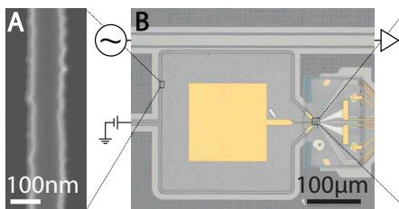</p>
<p>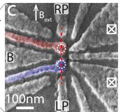</p>
<p>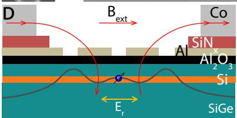</p>
<p><sub>)</sub>C<br/>
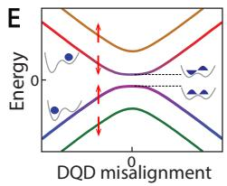<br/>
D<br/>
FIG. 1. Device images and schematic (A) Scanning electron micrograph of a segment of the NbTiN resonator center conductor. (B) Optical micrograph of the resonator (square shape) adjacent to the feed line (top) and double dot (right). The yellow square in the center is a bond pad to bias gate B. (C) Scanning electron micrograph showing the gates used to form the double quantum dot (white dotted circles indicate dot positions). The purple and red colored gates are connected to the resonator ends. (D) Schematic cross-section of the quantum dot along the red dashed line in panel (d), showing the Si quantum well with SiGe bufer and barrier layers, and the <span class="katex"><span class="katex-html" aria-hidden="true"><span class="base"><span class="strut" style="height:0.8444em;vertical-align:-0.15em;"></span><span class="mord"><span class="mord"><span class="mord"><span class="mord mathrm">Al</span></span><span class="msupsub"><span class="vlist-t vlist-t2"><span class="vlist-r"><span class="vlist" style="height:0.3011em;"><span style="top:-2.55em;margin-right:0.05em;"><span class="pstrut" style="height:2.7em;"></span><span class="sizing reset-size6 size3 mtight"><span class="mord mtight"><span class="mord mathrm mtight">2</span></span></span></span></span><span class="vlist-s">​</span></span><span class="vlist-r"><span class="vlist" style="height:0.15em;"><span></span></span></span></span></span></span><span class="mord"><span class="mord"><span class="mord mathrm">O</span></span><span class="msupsub"><span class="vlist-t vlist-t2"><span class="vlist-r"><span class="vlist" style="height:0.3011em;"><span style="top:-2.55em;margin-right:0.05em;"><span class="pstrut" style="height:2.7em;"></span><span class="sizing reset-size6 size3 mtight"><span class="mord mtight"><span class="mord mathrm mtight">3</span></span></span></span></span><span class="vlist-s">​</span></span><span class="vlist-r"><span class="vlist" style="height:0.15em;"><span></span></span></span></span></span></span></span></span></span></span> and <span class="katex"><span class="katex-html" aria-hidden="true"><span class="base"><span class="strut" style="height:0.8333em;vertical-align:-0.15em;"></span><span class="mord"><span class="mord"><span class="mord mathrm">SiN</span></span><span class="msupsub"><span class="vlist-t vlist-t2"><span class="vlist-r"><span class="vlist" style="height:0.1514em;"><span style="top:-2.55em;margin-right:0.05em;"><span class="pstrut" style="height:2.7em;"></span><span class="sizing reset-size6 size3 mtight"><span class="mord mtight"><span class="mord mathnormal mtight">x</span></span></span></span></span><span class="vlist-s">​</span></span><span class="vlist-r"><span class="vlist" style="height:0.15em;"><span></span></span></span></span></span></span></span></span></span> dielectrics separating the substrate from the Al gates and Co micromagnets. In the experiment, a single electron moves in the double dot potential landscape (grey line) in response to the resonator electric field, <span class="katex"><span class="katex-html" aria-hidden="true"><span class="base"><span class="strut" style="height:0.8333em;vertical-align:-0.15em;"></span><span class="mord"><span class="mord mathnormal" style="margin-right:0.0576em;">E</span><span class="msupsub"><span class="vlist-t vlist-t2"><span class="vlist-r"><span class="vlist" style="height:0.1514em;"><span style="top:-2.55em;margin-left:-0.0576em;margin-right:0.05em;"><span class="pstrut" style="height:2.7em;"></span><span class="sizing reset-size6 size3 mtight"><span class="mord mtight"><span class="mord mathnormal mtight" style="margin-right:0.0278em;">r</span><span class="mord mtight">.</span></span></span></span></span><span class="vlist-s">​</span></span><span class="vlist-r"><span class="vlist" style="height:0.15em;"><span></span></span></span></span></span></span><span class="mspace"> </span><span class="mord"><span class="mspace nobreak"> </span><span class="mord mathrm">A</span><span class="mspace nobreak"> </span></span></span></span></span> magnetic field is applied in the plane of the quantum well. The Co micromagnets create an additional magnetic field component, with a diferent orientation between the two dots. (E) The DQD energy levels as a function of DQD misalignment. Near <span class="katex"><span class="katex-html" aria-hidden="true"><span class="base"><span class="strut" style="height:0.4306em;"></span><span class="mord mathnormal">ϵ</span><span class="mspace" style="margin-right:0.2778em;"></span><span class="mrel">=</span><span class="mspace" style="margin-right:0.2778em;"></span></span><span class="base"><span class="strut" style="height:0.6444em;"></span><span class="mord">0</span></span></span></span> , the left and right dot levels hybridize, forming bonding and anti-bonding states that define a charge qubit [29]. Each of the DQD levels is split by the Zeeman energy. The micromagnet causes spin and orbital levels to hybridize as well.</p>
<p>To characterize the charge-photon interaction, we tune the DQD to a regime where the electron can move back and forth between the two dots in response to the cavity electric field. Such motion is possible whenever the electrochemical potentials of the two dots are aligned, i.e. where it costs equal energy for an electron to be in either dot. This occurs for specific combinations of gate voltages, seen as the short bright lines in Fig. 2A, where the charge-photon interaction modifies the transmission [31]. We focus on the lower left line, which corresponds to the last electron in the DQD.</p>
<p>B<br/>
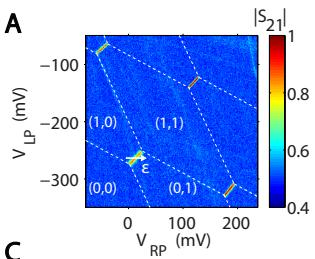</p>
<p>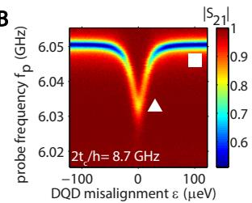</p>
<p>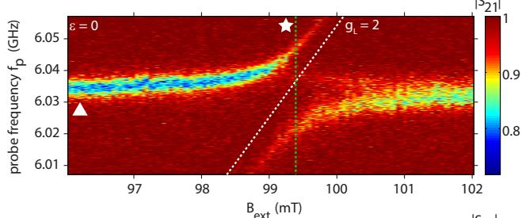</p>
<p>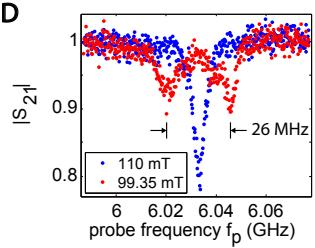</p>
<p>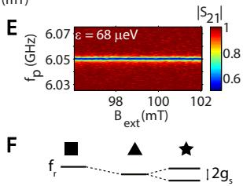<br/>
FIG. 2. Strong spin-photon coupling. (A) Transmission as a function of two gate voltages that control the potential of the two dots. At the four bright lines, the electron can move between the dots. The dashed lines connecting the short lines indicate alignment of a dot with a reservoir electrochemical potential. Labels indicate the electron number in the two dots. (B) Transmission as a function of  (along the full white line in panel <span class="katex"><span class="katex-html" aria-hidden="true"><span class="base"><span class="strut" style="height:1em;vertical-align:-0.25em;"></span><span class="mord mathrm">A</span><span class="mclose">)</span></span></span></span> and <span class="katex"><span class="katex-html" aria-hidden="true"><span class="base"><span class="strut" style="height:0.9805em;vertical-align:-0.2861em;"></span><span class="mord"><span class="mord mathnormal" style="margin-right:0.1076em;">f</span><span class="msupsub"><span class="vlist-t vlist-t2"><span class="vlist-r"><span class="vlist" style="height:0.1514em;"><span style="top:-2.55em;margin-left:-0.1076em;margin-right:0.05em;"><span class="pstrut" style="height:2.7em;"></span><span class="sizing reset-size6 size3 mtight"><span class="mord mtight"><span class="mord mathnormal mtight">p</span></span></span></span></span><span class="vlist-s">​</span></span><span class="vlist-r"><span class="vlist" style="height:0.2861em;"><span></span></span></span></span></span></span><span class="mord">.</span></span></span></span> . At large ||, we measure the bare resonator transmission (square symbol). Near <span class="katex"><span class="katex-html" aria-hidden="true"><span class="base"><span class="strut" style="height:0.4306em;"></span><span class="mord mathnormal">ϵ</span><span class="mspace" style="margin-right:0.2778em;"></span><span class="mrel">=</span><span class="mspace" style="margin-right:0.2778em;"></span></span><span class="base"><span class="strut" style="height:0.6444em;"></span><span class="mord">0</span></span></span></span> , the DQD charge qubit interacts dispersively with the cavity frequency, leading to a characteristic frequency shift (triangle symbol). (C) Transmission as a function of <span class="katex"><span class="katex-html" aria-hidden="true"><span class="base"><span class="strut" style="height:0.8333em;vertical-align:-0.15em;"></span><span class="mord"><span class="mord mathnormal" style="margin-right:0.0502em;">B</span><span class="msupsub"><span class="vlist-t vlist-t2"><span class="vlist-r"><span class="vlist" style="height:0.2806em;"><span style="top:-2.55em;margin-left:-0.0502em;margin-right:0.05em;"><span class="pstrut" style="height:2.7em;"></span><span class="sizing reset-size6 size3 mtight"><span class="mord mtight"><span class="mord mtight"><span class="mord mathrm mtight">ext</span></span></span></span></span></span><span class="vlist-s">​</span></span><span class="vlist-r"><span class="vlist" style="height:0.15em;"><span></span></span></span></span></span></span></span></span></span> and <span class="katex"><span class="katex-html" aria-hidden="true"><span class="base"><span class="strut" style="height:0.9805em;vertical-align:-0.2861em;"></span><span class="mord"><span class="mord mathnormal" style="margin-right:0.1076em;">f</span><span class="msupsub"><span class="vlist-t vlist-t2"><span class="vlist-r"><span class="vlist" style="height:0.1514em;"><span style="top:-2.55em;margin-left:-0.1076em;margin-right:0.05em;"><span class="pstrut" style="height:2.7em;"></span><span class="sizing reset-size6 size3 mtight"><span class="mord mtight"><span class="mord mathnormal mtight">p</span></span></span></span></span><span class="vlist-s">​</span></span><span class="vlist-r"><span class="vlist" style="height:0.2861em;"><span></span></span></span></span></span></span></span></span></span> . When <span class="katex"><span class="katex-html" aria-hidden="true"><span class="base"><span class="strut" style="height:0.8333em;vertical-align:-0.15em;"></span><span class="mord"><span class="mord mathnormal" style="margin-right:0.0502em;">B</span><span class="msupsub"><span class="vlist-t vlist-t2"><span class="vlist-r"><span class="vlist" style="height:0.2806em;"><span style="top:-2.55em;margin-left:-0.0502em;margin-right:0.05em;"><span class="pstrut" style="height:2.7em;"></span><span class="sizing reset-size6 size3 mtight"><span class="mord mtight"><span class="mord mtight"><span class="mord mathrm mtight">ext</span></span></span></span></span></span><span class="vlist-s">​</span></span><span class="vlist-r"><span class="vlist" style="height:0.15em;"><span></span></span></span></span></span></span></span></span></span> makes the spin spitting resonant with the resonator frequency (star symbol), a clear avoided crossing occurs, which we attribute to the strong coupling of a single spin and a single photon. The dotted line shows the expected spin splitting for a spin in silicon. (D) Line cut through panel C at the position of the green vertical line (red data points) and line cut at 110 mT (blue points). The red data shows clear vacuum Rabi splitting. (E) Similar to C but with the DQD misaligned, so the electron cannot move between the two dots. The spin-photon coupling is no longer visible. (F) Schematic representation of the transmission resonance of the superconducting cavity. The bare transmission resonance (square) is shifted dispersively by its interaction with the charge qubit (triangle), and splits when it is resonant with the spin qubit (star).</p>
<p>In order to place the charge-photon interaction in the dispersive regime, we set the charge qubit splitting <span class="katex"><span class="katex-html" aria-hidden="true"><span class="base"><span class="strut" style="height:0.8889em;vertical-align:-0.1944em;"></span><span class="mord"><span class="mord mathnormal" style="margin-right:0.1076em;">f</span><span class="msupsub"><span class="vlist-t vlist-t2"><span class="vlist-r"><span class="vlist" style="height:0.1514em;"><span style="top:-2.55em;margin-left:-0.1076em;margin-right:0.05em;"><span class="pstrut" style="height:2.7em;"></span><span class="sizing reset-size6 size3 mtight"><span class="mord mtight"><span class="mord mathnormal mtight">c</span></span></span></span></span><span class="vlist-s">​</span></span><span class="vlist-r"><span class="vlist" style="height:0.15em;"><span></span></span></span></span></span></span></span></span></span> in the range of 8 to 15 GHz, so that <span class="katex"><span class="katex-html" aria-hidden="true"><span class="base"><span class="strut" style="height:0.8889em;vertical-align:-0.1944em;"></span><span class="mord"><span class="mord mathnormal" style="margin-right:0.1076em;">f</span><span class="msupsub"><span class="vlist-t vlist-t2"><span class="vlist-r"><span class="vlist" style="height:0.1514em;"><span style="top:-2.55em;margin-left:-0.1076em;margin-right:0.05em;"><span class="pstrut" style="height:2.7em;"></span><span class="sizing reset-size6 size3 mtight"><span class="mord mtight"><span class="mord mathnormal mtight">c</span></span></span></span></span><span class="vlist-s">​</span></span><span class="vlist-r"><span class="vlist" style="height:0.15em;"><span></span></span></span></span></span></span></span></span></span> is always well above <span class="katex"><span class="katex-html" aria-hidden="true"><span class="base"><span class="strut" style="height:0.8889em;vertical-align:-0.1944em;"></span><span class="mord"><span class="mord mathnormal" style="margin-right:0.1076em;">f</span><span class="msupsub"><span class="vlist-t vlist-t2"><span class="vlist-r"><span class="vlist" style="height:0.1514em;"><span style="top:-2.55em;margin-left:-0.1076em;margin-right:0.05em;"><span class="pstrut" style="height:2.7em;"></span><span class="sizing reset-size6 size3 mtight"><span class="mord mtight"><span class="mord mathnormal mtight" style="margin-right:0.0278em;">r</span></span></span></span></span><span class="vlist-s">​</span></span><span class="vlist-r"><span class="vlist" style="height:0.15em;"><span></span></span></span></span></span></span></span></span></span> . We measure <span class="katex"><span class="katex-html" aria-hidden="true"><span class="base"><span class="strut" style="height:0.8889em;vertical-align:-0.1944em;"></span><span class="mord"><span class="mord mathnormal" style="margin-right:0.1076em;">f</span><span class="msupsub"><span class="vlist-t vlist-t2"><span class="vlist-r"><span class="vlist" style="height:0.1514em;"><span style="top:-2.55em;margin-left:-0.1076em;margin-right:0.05em;"><span class="pstrut" style="height:2.7em;"></span><span class="sizing reset-size6 size3 mtight"><span class="mord mtight"><span class="mord mathnormal mtight">c</span></span></span></span></span><span class="vlist-s">​</span></span><span class="vlist-r"><span class="vlist" style="height:0.15em;"><span></span></span></span></span></span></span></span></span></span> using two-tone spectroscopy, as detailed below. In the dispersive regime, the chargephoton interaction results in a frequency shift of the resonator (Fig. 2F). In Fig. 2B, we observe the characteristic dependence of this dispersive shift on the DQD misalignment . At <span class="katex"><span class="katex-html" aria-hidden="true"><span class="base"><span class="strut" style="height:0.4306em;"></span><span class="mord mathnormal">ϵ</span><span class="mspace" style="margin-right:0.2778em;"></span><span class="mrel">=</span><span class="mspace" style="margin-right:0.2778em;"></span></span><span class="base"><span class="strut" style="height:0.6444em;"></span><span class="mord">0</span></span></span></span> , the electron can most easily move between the dots, hence the electrical susceptibility is the highest and the dispersive shift the largest (triangle). <span class="katex"><span class="katex-html" aria-hidden="true"><span class="base"><span class="strut" style="height:0.6833em;"></span><span class="mord"><span class="mord mathrm">At</span></span><span class="mspace"> </span><span class="mord mathnormal">ϵ</span><span class="mspace" style="margin-right:0.2778em;"></span><span class="mrel">=</span><span class="mspace" style="margin-right:0.2778em;"></span></span><span class="base"><span class="strut" style="height:0.6444em;"></span><span class="mord">0</span></span></span></span> , the magnitude of the dispersive shift is approximated by <span class="katex"><span class="katex-html" aria-hidden="true"><span class="base"><span class="strut" style="height:1.0641em;vertical-align:-0.25em;"></span><span class="mopen">(</span><span class="mord"><span class="mord mathnormal" style="margin-right:0.0359em;">g</span><span class="msupsub"><span class="vlist-t vlist-t2"><span class="vlist-r"><span class="vlist" style="height:0.1514em;"><span style="top:-2.55em;margin-left:-0.0359em;margin-right:0.05em;"><span class="pstrut" style="height:2.7em;"></span><span class="sizing reset-size6 size3 mtight"><span class="mord mtight"><span class="mord mathnormal mtight">c</span></span></span></span></span><span class="vlist-s">​</span></span><span class="vlist-r"><span class="vlist" style="height:0.15em;"><span></span></span></span></span></span></span><span class="mord">/2</span><span class="mord mathnormal" style="margin-right:0.0359em;">π</span><span class="mclose"><span class="mclose">)</span><span class="msupsub"><span class="vlist-t"><span class="vlist-r"><span class="vlist" style="height:0.8141em;"><span style="top:-3.063em;margin-right:0.05em;"><span class="pstrut" style="height:2.7em;"></span><span class="sizing reset-size6 size3 mtight"><span class="mord mtight"><span class="mord mtight">2</span></span></span></span></span></span></span></span></span><span class="mord">/</span><span class="mopen">(</span><span class="mord"><span class="mord mathnormal" style="margin-right:0.1076em;">f</span><span class="msupsub"><span class="vlist-t vlist-t2"><span class="vlist-r"><span class="vlist" style="height:0.1514em;"><span style="top:-2.55em;margin-left:-0.1076em;margin-right:0.05em;"><span class="pstrut" style="height:2.7em;"></span><span class="sizing reset-size6 size3 mtight"><span class="mord mtight"><span class="mord mathnormal mtight">c</span></span></span></span></span><span class="vlist-s">​</span></span><span class="vlist-r"><span class="vlist" style="height:0.15em;"><span></span></span></span></span></span></span><span class="mspace" style="margin-right:0.2222em;"></span><span class="mbin">−</span><span class="mspace" style="margin-right:0.2222em;"></span></span><span class="base"><span class="strut" style="height:1em;vertical-align:-0.25em;"></span><span class="mord"><span class="mord mathnormal" style="margin-right:0.1076em;">f</span><span class="msupsub"><span class="vlist-t vlist-t2"><span class="vlist-r"><span class="vlist" style="height:0.1514em;"><span style="top:-2.55em;margin-left:-0.1076em;margin-right:0.05em;"><span class="pstrut" style="height:2.7em;"></span><span class="sizing reset-size6 size3 mtight"><span class="mord mtight"><span class="mord mathnormal mtight" style="margin-right:0.0278em;">r</span></span></span></span></span><span class="vlist-s">​</span></span><span class="vlist-r"><span class="vlist" style="height:0.15em;"><span></span></span></span></span></span></span><span class="mclose">)</span></span></span></span> , where the charge-photon coupling strength <span class="katex"><span class="katex-html" aria-hidden="true"><span class="base"><span class="strut" style="height:0.625em;vertical-align:-0.1944em;"></span><span class="mord"><span class="mord mathnormal" style="margin-right:0.0359em;">g</span><span class="msupsub"><span class="vlist-t vlist-t2"><span class="vlist-r"><span class="vlist" style="height:0.1514em;"><span style="top:-2.55em;margin-left:-0.0359em;margin-right:0.05em;"><span class="pstrut" style="height:2.7em;"></span><span class="sizing reset-size6 size3 mtight"><span class="mord mtight"><span class="mord mathnormal mtight">c</span></span></span></span></span><span class="vlist-s">​</span></span><span class="vlist-r"><span class="vlist" style="height:0.15em;"><span></span></span></span></span></span></span></span></span></span> is mostly fixed by design and the detuning between <span class="katex"><span class="katex-html" aria-hidden="true"><span class="base"><span class="strut" style="height:0.8889em;vertical-align:-0.1944em;"></span><span class="mord"><span class="mord mathnormal" style="margin-right:0.1076em;">f</span><span class="msupsub"><span class="vlist-t vlist-t2"><span class="vlist-r"><span class="vlist" style="height:0.1514em;"><span style="top:-2.55em;margin-left:-0.1076em;margin-right:0.05em;"><span class="pstrut" style="height:2.7em;"></span><span class="sizing reset-size6 size3 mtight"><span class="mord mtight"><span class="mord mathnormal mtight">c</span></span></span></span></span><span class="vlist-s">​</span></span><span class="vlist-r"><span class="vlist" style="height:0.15em;"><span></span></span></span></span></span></span></span></span></span> and <span class="katex"><span class="katex-html" aria-hidden="true"><span class="base"><span class="strut" style="height:0.8889em;vertical-align:-0.1944em;"></span><span class="mord"><span class="mord mathnormal" style="margin-right:0.1076em;">f</span><span class="msupsub"><span class="vlist-t vlist-t2"><span class="vlist-r"><span class="vlist" style="height:0.1514em;"><span style="top:-2.55em;margin-left:-0.1076em;margin-right:0.05em;"><span class="pstrut" style="height:2.7em;"></span><span class="sizing reset-size6 size3 mtight"><span class="mord mtight"><span class="mord mathnormal mtight" style="margin-right:0.0278em;">r</span></span></span></span></span><span class="vlist-s">​</span></span><span class="vlist-r"><span class="vlist" style="height:0.15em;"><span></span></span></span></span></span></span></span></span></span> can be adjusted. From a fit based on input-output theory [30], we extract a chargephoton coupling strength <span class="katex"><span class="katex-html" aria-hidden="true"><span class="base"><span class="strut" style="height:1em;vertical-align:-0.25em;"></span><span class="mord"><span class="mord mathnormal" style="margin-right:0.0359em;">g</span><span class="msupsub"><span class="vlist-t vlist-t2"><span class="vlist-r"><span class="vlist" style="height:0.1514em;"><span style="top:-2.55em;margin-left:-0.0359em;margin-right:0.05em;"><span class="pstrut" style="height:2.7em;"></span><span class="sizing reset-size6 size3 mtight"><span class="mord mtight"><span class="mord mathnormal mtight">c</span></span></span></span></span><span class="vlist-s">​</span></span><span class="vlist-r"><span class="vlist" style="height:0.15em;"><span></span></span></span></span></span></span><span class="mord">/2</span><span class="mord mathnormal" style="margin-right:0.0359em;">π</span></span></span></span> of ∼ 200 MHz.</p>
<p>A<br/>
B<br/>
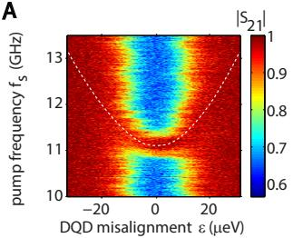</p>
<p>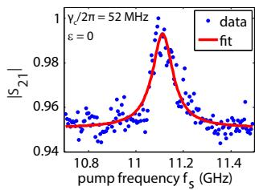<br/>
D</p>
<p>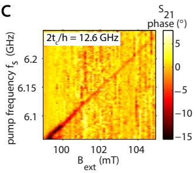</p>
<p>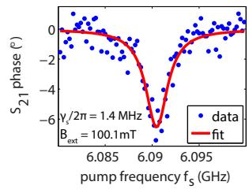<br/>
FIG. 3. Two-tone spectroscopy of the charge and spin qubit (A) Transmission at <span class="katex"><span class="katex-html" aria-hidden="true"><span class="base"><span class="strut" style="height:0.9805em;vertical-align:-0.2861em;"></span><span class="mord"><span class="mord mathnormal" style="margin-right:0.1076em;">f</span><span class="msupsub"><span class="vlist-t vlist-t2"><span class="vlist-r"><span class="vlist" style="height:0.1514em;"><span style="top:-2.55em;margin-left:-0.1076em;margin-right:0.05em;"><span class="pstrut" style="height:2.7em;"></span><span class="sizing reset-size6 size3 mtight"><span class="mord mtight"><span class="mord mathnormal mtight">p</span></span></span></span></span><span class="vlist-s">​</span></span><span class="vlist-r"><span class="vlist" style="height:0.2861em;"><span></span></span></span></span></span></span><span class="mspace" style="margin-right:0.2778em;"></span><span class="mrel">=</span><span class="mspace" style="margin-right:0.2778em;"></span></span><span class="base"><span class="strut" style="height:0.6444em;"></span><span class="mord">6.041</span></span></span></span> GHz as a function of DQD misalignment  and the frequency of a second tone (pump frequency) that is applied to gate LP. When the second tone is in resonance with the charge qubit splitting (white dotted line), the steady-state occupation of the charge qubit is changed, and due to the charge-photon coupling, this is reflected in a modified dispersive shift of the resonator. (B) Line cut at <span class="katex"><span class="katex-html" aria-hidden="true"><span class="base"><span class="strut" style="height:0.4306em;"></span><span class="mord mathnormal">ϵ</span><span class="mspace" style="margin-right:0.2778em;"></span><span class="mrel">=</span><span class="mspace" style="margin-right:0.2778em;"></span></span><span class="base"><span class="strut" style="height:0.6444em;"></span><span class="mord">0</span></span></span></span> , from which we extract a charge qubit dephasing rate of 52 MHz. (C) Transmission (phase response) at <span class="katex"><span class="katex-html" aria-hidden="true"><span class="base"><span class="strut" style="height:0.9805em;vertical-align:-0.2861em;"></span><span class="mord"><span class="mord mathnormal" style="margin-right:0.1076em;">f</span><span class="msupsub"><span class="vlist-t vlist-t2"><span class="vlist-r"><span class="vlist" style="height:0.1514em;"><span style="top:-2.55em;margin-left:-0.1076em;margin-right:0.05em;"><span class="pstrut" style="height:2.7em;"></span><span class="sizing reset-size6 size3 mtight"><span class="mord mtight"><span class="mord mathnormal mtight">p</span></span></span></span></span><span class="vlist-s">​</span></span><span class="vlist-r"><span class="vlist" style="height:0.2861em;"><span></span></span></span></span></span></span><span class="mspace" style="margin-right:0.2778em;"></span><span class="mrel">=</span><span class="mspace" style="margin-right:0.2778em;"></span></span><span class="base"><span class="strut" style="height:0.6444em;"></span><span class="mord">6.043</span></span></span></span> GHz as a function of <span class="katex"><span class="katex-html" aria-hidden="true"><span class="base"><span class="strut" style="height:0.8361em;vertical-align:-0.15em;"></span><span class="mord"><span class="mord"><span class="mord"><span class="mord boldsymbol" style="margin-right:0.0483em;">B</span></span></span><span class="msupsub"><span class="vlist-t vlist-t2"><span class="vlist-r"><span class="vlist" style="height:0.2806em;"><span style="top:-2.55em;margin-right:0.05em;"><span class="pstrut" style="height:2.7em;"></span><span class="sizing reset-size6 size3 mtight"><span class="mord mtight"><span class="mord mtight"><span class="mord mathrm mtight">ext</span></span></span></span></span></span><span class="vlist-s">​</span></span><span class="vlist-r"><span class="vlist" style="height:0.15em;"><span></span></span></span></span></span></span></span></span></span> and the pump frequency applied to gate LP. When the pump frequency is in resonance with the spin qubit splitting, the steady-state occupation of the spin qubit is changed, and due to the spin-photon coupling, this is reflected in a modified response of the resonator. The slope of the response corresponds to a spin with <span class="katex"><span class="katex-html" aria-hidden="true"><span class="base"><span class="strut" style="height:0.625em;vertical-align:-0.1944em;"></span><span class="mord"><span class="mord mathnormal" style="margin-right:0.0359em;">g</span><span class="msupsub"><span class="vlist-t vlist-t2"><span class="vlist-r"><span class="vlist" style="height:0.3283em;"><span style="top:-2.55em;margin-left:-0.0359em;margin-right:0.05em;"><span class="pstrut" style="height:2.7em;"></span><span class="sizing reset-size6 size3 mtight"><span class="mord mtight"><span class="mord mathnormal mtight">L</span></span></span></span></span><span class="vlist-s">​</span></span><span class="vlist-r"><span class="vlist" style="height:0.15em;"><span></span></span></span></span></span></span><span class="mspace" style="margin-right:0.2778em;"></span><span class="mrel">=</span><span class="mspace" style="margin-right:0.2778em;"></span></span><span class="base"><span class="strut" style="height:0.8389em;vertical-align:-0.1944em;"></span><span class="mord">2</span><span class="mpunct">,</span></span></span></span> as expected. (D) Line cut at <span class="katex"><span class="katex-html" aria-hidden="true"><span class="base"><span class="strut" style="height:0.8333em;vertical-align:-0.15em;"></span><span class="mord"><span class="mord mathnormal" style="margin-right:0.0502em;">B</span><span class="msupsub"><span class="vlist-t vlist-t2"><span class="vlist-r"><span class="vlist" style="height:0.2806em;"><span style="top:-2.55em;margin-left:-0.0502em;margin-right:0.05em;"><span class="pstrut" style="height:2.7em;"></span><span class="sizing reset-size6 size3 mtight"><span class="mord mtight"><span class="mord mtight"><span class="mord mathrm mtight">ext</span></span></span></span></span></span><span class="vlist-s">​</span></span><span class="vlist-r"><span class="vlist" style="height:0.15em;"><span></span></span></span></span></span></span><span class="mspace" style="margin-right:0.2778em;"></span><span class="mrel">=</span><span class="mspace" style="margin-right:0.2778em;"></span></span><span class="base"><span class="strut" style="height:0.6444em;"></span><span class="mord">100.1</span></span></span></span> mT, from which we extract a spin qubit dephasing rate of 1.4 MHz.</p>
<p>To probe coherent spin-photon coupling, we keep the charge sector parameters constant so that the interaction with charge remains dispersive. By varying <span class="katex"><span class="katex-html" aria-hidden="true"><span class="base"><span class="strut" style="height:0.8333em;vertical-align:-0.15em;"></span><span class="mord"><span class="mord mathnormal" style="margin-right:0.0502em;">B</span><span class="msupsub"><span class="vlist-t vlist-t2"><span class="vlist-r"><span class="vlist" style="height:0.2806em;"><span style="top:-2.55em;margin-left:-0.0502em;margin-right:0.05em;"><span class="pstrut" style="height:2.7em;"></span><span class="sizing reset-size6 size3 mtight"><span class="mord mtight"><span class="mord mtight"><span class="mord mathrm mtight">ext</span></span></span></span></span></span><span class="vlist-s">​</span></span><span class="vlist-r"><span class="vlist" style="height:0.15em;"><span></span></span></span></span></span></span></span></span></span> , we control the spin splitting such that the interaction with the spin goes from dispersive to resonant. On resonance, spin and photon hybridize (Fig. 2F triangle). Experimentally, we record the transmission through the feed line as a function of the strength of an in-plane magnetic field <span class="katex"><span class="katex-html" aria-hidden="true"><span class="base"><span class="strut" style="height:0.8361em;vertical-align:-0.15em;"></span><span class="mord"><span class="mord"><span class="mord"><span class="mord boldsymbol" style="margin-right:0.0483em;">B</span></span></span><span class="msupsub"><span class="vlist-t vlist-t2"><span class="vlist-r"><span class="vlist" style="height:0.2806em;"><span style="top:-2.55em;margin-right:0.05em;"><span class="pstrut" style="height:2.7em;"></span><span class="sizing reset-size6 size3 mtight"><span class="mord mtight"><span class="mord mtight"><span class="mord mathrm mtight">ext</span></span></span></span></span></span><span class="vlist-s">​</span></span><span class="vlist-r"><span class="vlist" style="height:0.15em;"><span></span></span></span></span></span></span></span></span></span> (the total field is the vector sum of external field and the micromagnet stray field) and the probe frequency <span class="katex"><span class="katex-html" aria-hidden="true"><span class="base"><span class="strut" style="height:0.9805em;vertical-align:-0.2861em;"></span><span class="mord"><span class="mord mathnormal" style="margin-right:0.1076em;">f</span><span class="msupsub"><span class="vlist-t vlist-t2"><span class="vlist-r"><span class="vlist" style="height:0.1514em;"><span style="top:-2.55em;margin-left:-0.1076em;margin-right:0.05em;"><span class="pstrut" style="height:2.7em;"></span><span class="sizing reset-size6 size3 mtight"><span class="mord mtight"><span class="mord mathnormal mtight">p</span></span></span></span></span><span class="vlist-s">​</span></span><span class="vlist-r"><span class="vlist" style="height:0.2861em;"><span></span></span></span></span></span></span></span></span></span> applied to the feed line. As expected, the cavity resonance seen in transmission is (nearly) independent of <span class="katex"><span class="katex-html" aria-hidden="true"><span class="base"><span class="strut" style="height:0.8333em;vertical-align:-0.15em;"></span><span class="mord"><span class="mord mathnormal" style="margin-right:0.0502em;">B</span><span class="msupsub"><span class="vlist-t vlist-t2"><span class="vlist-r"><span class="vlist" style="height:0.2806em;"><span style="top:-2.55em;margin-left:-0.0502em;margin-right:0.05em;"><span class="pstrut" style="height:2.7em;"></span><span class="sizing reset-size6 size3 mtight"><span class="mord mtight"><span class="mord mtight"><span class="mord mathrm mtight">ext</span></span></span></span></span></span><span class="vlist-s">​</span></span><span class="vlist-r"><span class="vlist" style="height:0.15em;"><span></span></span></span></span></span></span></span></span></span> at large spin-resonator detuning. When the spin splitting approaches resonance with the resonator frequency, we observe a strong response in the form of an anti-crossing (Fig. 2C). The slope <span class="katex"><span class="katex-html" aria-hidden="true"><span class="base"><span class="strut" style="height:1em;vertical-align:-0.25em;"></span><span class="mord mathnormal" style="margin-right:0.1076em;">f</span><span class="mord">/</span><span class="mord"><span class="mord mathnormal" style="margin-right:0.0502em;">B</span><span class="msupsub"><span class="vlist-t vlist-t2"><span class="vlist-r"><span class="vlist" style="height:0.2806em;"><span style="top:-2.55em;margin-left:-0.0502em;margin-right:0.05em;"><span class="pstrut" style="height:2.7em;"></span><span class="sizing reset-size6 size3 mtight"><span class="mord mtight"><span class="mord mtight"><span class="mord mathrm mtight">ext</span></span></span></span></span></span><span class="vlist-s">​</span></span><span class="vlist-r"><span class="vlist" style="height:0.15em;"><span></span></span></span></span></span></span></span></span></span> of the slanted branch corresponds to <span class="katex"><span class="katex-html" aria-hidden="true"><span class="base"><span class="strut" style="height:0.625em;vertical-align:-0.1944em;"></span><span class="mord"><span class="mord mathnormal" style="margin-right:0.0359em;">g</span><span class="msupsub"><span class="vlist-t vlist-t2"><span class="vlist-r"><span class="vlist" style="height:0.3283em;"><span style="top:-2.55em;margin-left:-0.0359em;margin-right:0.05em;"><span class="pstrut" style="height:2.7em;"></span><span class="sizing reset-size6 size3 mtight"><span class="mord mtight"><span class="mord mathnormal mtight">L</span></span></span></span></span><span class="vlist-s">​</span></span><span class="vlist-r"><span class="vlist" style="height:0.15em;"><span></span></span></span></span></span></span><span class="mord"><span class="mord mathnormal">μ</span><span class="msupsub"><span class="vlist-t vlist-t2"><span class="vlist-r"><span class="vlist" style="height:0.3283em;"><span style="top:-2.55em;margin-left:0em;margin-right:0.05em;"><span class="pstrut" style="height:2.7em;"></span><span class="sizing reset-size6 size3 mtight"><span class="mord mtight"><span class="mord mathnormal mtight" style="margin-right:0.0502em;">B</span></span></span></span></span><span class="vlist-s">​</span></span><span class="vlist-r"><span class="vlist" style="height:0.15em;"><span></span></span></span></span></span></span></span></span></span> , with µ<sub>B</sub> the Bohr magneton and <span class="katex"><span class="katex-html" aria-hidden="true"><span class="base"><span class="strut" style="height:0.6776em;vertical-align:-0.1944em;"></span><span class="mord"><span class="mord mathnormal" style="margin-right:0.0359em;">g</span><span class="msupsub"><span class="vlist-t vlist-t2"><span class="vlist-r"><span class="vlist" style="height:0.3283em;"><span style="top:-2.55em;margin-left:-0.0359em;margin-right:0.05em;"><span class="pstrut" style="height:2.7em;"></span><span class="sizing reset-size6 size3 mtight"><span class="mord mtight"><span class="mord mathnormal mtight">L</span></span></span></span></span><span class="vlist-s">​</span></span><span class="vlist-r"><span class="vlist" style="height:0.15em;"><span></span></span></span></span></span></span><span class="mspace" style="margin-right:0.2778em;"></span><span class="mrel">≈</span><span class="mspace" style="margin-right:0.2778em;"></span></span><span class="base"><span class="strut" style="height:0.6444em;"></span><span class="mord">2</span></span></span></span> the Land´e g-factor of an electron spin in Si. The observed avoided crossing is thus a clear signature of the coherent hybridization of the spin qubit with a single microwave photon.</p>
<p>The line cut, indicated by the dashed green line in Fig. 2C and shown in Fig. 2D, reveals two well separated peaks. This feature is known as the vacuum Rabi splitting and is the hallmark of strong coherent spin-photon coupling. The peak separation is about 26 MHz, corresponding to a spin-photon coupling strength <span class="katex"><span class="katex-html" aria-hidden="true"><span class="base"><span class="strut" style="height:1em;vertical-align:-0.25em;"></span><span class="mord"><span class="mord mathnormal" style="margin-right:0.0359em;">g</span><span class="msupsub"><span class="vlist-t vlist-t2"><span class="vlist-r"><span class="vlist" style="height:0.1514em;"><span style="top:-2.55em;margin-left:-0.0359em;margin-right:0.05em;"><span class="pstrut" style="height:2.7em;"></span><span class="sizing reset-size6 size3 mtight"><span class="mord mtight"><span class="mord mathnormal mtight">s</span></span></span></span></span><span class="vlist-s">​</span></span><span class="vlist-r"><span class="vlist" style="height:0.15em;"><span></span></span></span></span></span></span><span class="mord">/2</span><span class="mord mathnormal" style="margin-right:0.0359em;">π</span></span></span></span> of 13 MHz. The cavity decay rate can be extracted independently from the linewidth away from spin-photon resonance, here <span class="katex"><span class="katex-html" aria-hidden="true"><span class="base"><span class="strut" style="height:1em;vertical-align:-0.25em;"></span><span class="mord mathnormal">κ</span><span class="mord">/2</span><span class="mord mathnormal" style="margin-right:0.0359em;">π</span><span class="mspace" style="margin-right:0.2778em;"></span><span class="mrel">=</span><span class="mspace" style="margin-right:0.2778em;"></span></span><span class="base"><span class="strut" style="height:0.6444em;"></span><span class="mord">5.4</span></span></span></span> MHz (here the cavity dispersively interacts with the charge, so <span class="katex"><span class="katex-html" aria-hidden="true"><span class="base"><span class="strut" style="height:0.5782em;vertical-align:-0.0391em;"></span><span class="mord mathnormal">κ</span><span class="mspace" style="margin-right:0.2778em;"></span><span class="mrel">></span><span class="mspace" style="margin-right:0.2778em;"></span></span><span class="base"><span class="strut" style="height:1em;vertical-align:-0.25em;"></span><span class="mord"><span class="mord mathnormal">κ</span><span class="msupsub"><span class="vlist-t vlist-t2"><span class="vlist-r"><span class="vlist" style="height:0.1514em;"><span style="top:-2.55em;margin-left:0em;margin-right:0.05em;"><span class="pstrut" style="height:2.7em;"></span><span class="sizing reset-size6 size3 mtight"><span class="mord mtight"><span class="mord mathnormal mtight" style="margin-right:0.0278em;">r</span></span></span></span></span><span class="vlist-s">​</span></span><span class="vlist-r"><span class="vlist" style="height:0.15em;"><span></span></span></span></span></span></span><span class="mspace nobreak"> </span><span class="mopen">[</span><span class="mord">31</span><span class="mclose">])</span></span></span></span> . The spin dephasing rate <span class="katex"><span class="katex-html" aria-hidden="true"><span class="base"><span class="strut" style="height:1em;vertical-align:-0.25em;"></span><span class="mord"><span class="mord mathnormal" style="margin-right:0.0556em;">γ</span><span class="msupsub"><span class="vlist-t vlist-t2"><span class="vlist-r"><span class="vlist" style="height:0.1514em;"><span style="top:-2.55em;margin-left:-0.0556em;margin-right:0.05em;"><span class="pstrut" style="height:2.7em;"></span><span class="sizing reset-size6 size3 mtight"><span class="mord mtight"><span class="mord mathnormal mtight">s</span></span></span></span></span><span class="vlist-s">​</span></span><span class="vlist-r"><span class="vlist" style="height:0.15em;"><span></span></span></span></span></span></span><span class="mord">/2</span><span class="mord mathnormal" style="margin-right:0.0359em;">π</span><span class="mspace" style="margin-right:0.2778em;"></span><span class="mrel">=</span><span class="mspace" style="margin-right:0.2778em;"></span></span><span class="base"><span class="strut" style="height:0.6444em;"></span><span class="mord">2.5</span></span></span></span> MHz is independently obtained from two-tone spectroscopy of the spin transition (discussed next). We observe that <span class="katex"><span class="katex-html" aria-hidden="true"><span class="base"><span class="strut" style="height:0.7335em;vertical-align:-0.1944em;"></span><span class="mord"><span class="mord mathnormal" style="margin-right:0.0359em;">g</span><span class="msupsub"><span class="vlist-t vlist-t2"><span class="vlist-r"><span class="vlist" style="height:0.1514em;"><span style="top:-2.55em;margin-left:-0.0359em;margin-right:0.05em;"><span class="pstrut" style="height:2.7em;"></span><span class="sizing reset-size6 size3 mtight"><span class="mord mtight"><span class="mord mathnormal mtight">s</span></span></span></span></span><span class="vlist-s">​</span></span><span class="vlist-r"><span class="vlist" style="height:0.15em;"><span></span></span></span></span></span></span><span class="mspace" style="margin-right:0.2778em;"></span><span class="mrel">></span><span class="mspace" style="margin-right:0.2778em;"></span></span><span class="base"><span class="strut" style="height:0.625em;vertical-align:-0.1944em;"></span><span class="mord mathnormal">κ</span><span class="mpunct">,</span><span class="mspace" style="margin-right:0.1667em;"></span><span class="mord"><span class="mord mathnormal" style="margin-right:0.0556em;">γ</span><span class="msupsub"><span class="vlist-t vlist-t2"><span class="vlist-r"><span class="vlist" style="height:0.1514em;"><span style="top:-2.55em;margin-left:-0.0556em;margin-right:0.05em;"><span class="pstrut" style="height:2.7em;"></span><span class="sizing reset-size6 size3 mtight"><span class="mord mtight"><span class="mord mathnormal mtight">s</span></span></span></span></span><span class="vlist-s">​</span></span><span class="vlist-r"><span class="vlist" style="height:0.15em;"><span></span></span></span></span></span></span></span></span></span> , satisfying the condition for strong coupling of a single electron spin to a single microwave photon.</p>
<p>Two-tone spectroscopy of the charge and spin qubits allows us to independently extract the respective qubit splittings and dephasing rates. In Fig. 3A,B the second tone is resonant with the charge qubit splitting around 11.1 GHz, with a dependence on  described by <span class="katex"><span class="katex-html" aria-hidden="true"><span class="base"><span class="strut" style="height:0.8889em;vertical-align:-0.1944em;"></span><span class="mord mathnormal">h</span><span class="mord"><span class="mord mathnormal" style="margin-right:0.1076em;">f</span><span class="msupsub"><span class="vlist-t vlist-t2"><span class="vlist-r"><span class="vlist" style="height:0.1514em;"><span style="top:-2.55em;margin-left:-0.1076em;margin-right:0.05em;"><span class="pstrut" style="height:2.7em;"></span><span class="sizing reset-size6 size3 mtight"><span class="mord mtight"><span class="mord mathnormal mtight">c</span></span></span></span></span><span class="vlist-s">​</span></span><span class="vlist-r"><span class="vlist" style="height:0.15em;"><span></span></span></span></span></span></span><span class="mspace" style="margin-right:0.2778em;"></span><span class="mrel">=</span><span class="mspace" style="margin-right:0.2778em;"></span></span><span class="base"><span class="strut" style="height:1.24em;vertical-align:-0.3084em;"></span><span class="mord sqrt"><span class="vlist-t vlist-t2"><span class="vlist-r"><span class="vlist" style="height:0.9316em;"><span class="svg-align" style="top:-3.2em;"><span class="pstrut" style="height:3.2em;"></span><span class="mord" style="padding-left:1em;"><span class="mord">4</span><span class="mord"><span class="mord mathnormal">t</span><span class="msupsub"><span class="vlist-t vlist-t2"><span class="vlist-r"><span class="vlist" style="height:0.7401em;"><span style="top:-2.453em;margin-left:0em;margin-right:0.05em;"><span class="pstrut" style="height:2.7em;"></span><span class="sizing reset-size6 size3 mtight"><span class="mord mtight"><span class="mord mathnormal mtight">c</span></span></span></span><span style="top:-2.989em;margin-right:0.05em;"><span class="pstrut" style="height:2.7em;"></span><span class="sizing reset-size6 size3 mtight"><span class="mord mtight"><span class="mord mtight">2</span></span></span></span></span><span class="vlist-s">​</span></span><span class="vlist-r"><span class="vlist" style="height:0.247em;"><span></span></span></span></span></span></span><span class="mspace" style="margin-right:0.2222em;"></span><span class="mbin">+</span><span class="mspace" style="margin-right:0.2222em;"></span><span class="mord"><span class="mord mathnormal">ϵ</span><span class="msupsub"><span class="vlist-t"><span class="vlist-r"><span class="vlist" style="height:0.7401em;"><span style="top:-2.989em;margin-right:0.05em;"><span class="pstrut" style="height:2.7em;"></span><span class="sizing reset-size6 size3 mtight"><span class="mord mtight"><span class="mord mtight">2</span></span></span></span></span></span></span></span></span></span></span><span style="top:-2.8916em;"><span class="pstrut" style="height:3.2em;"></span><span class="hide-tail" style="min-width:1.02em;height:1.28em;"><svg xmlns="http://www.w3.org/2000/svg" width="400em" height="1.28em" viewBox="0 0 400000 1296" preserveAspectRatio="xMinYMin slice"><path d="M263,681c0.7,0,18,39.7,52,119
c34,79.3,68.167,158.7,102.5,238c34.3,79.3,51.8,119.3,52.5,120
c340,-704.7,510.7,-1060.3,512,-1067
l0 -0
c4.7,-7.3,11,-11,19,-11
H40000v40H1012.3
s-271.3,567,-271.3,567c-38.7,80.7,-84,175,-136,283c-52,108,-89.167,185.3,-111.5,232
c-22.3,46.7,-33.8,70.3,-34.5,71c-4.7,4.7,-12.3,7,-23,7s-12,-1,-12,-1
s-109,-253,-109,-253c-72.7,-168,-109.3,-252,-110,-252c-10.7,8,-22,16.7,-34,26
c-22,17.3,-33.3,26,-34,26s-26,-26,-26,-26s76,-59,76,-59s76,-60,76,-60z
M1001 80h400000v40h-400000z"></path></svg></span></span></span><span class="vlist-s">​</span></span><span class="vlist-r"><span class="vlist" style="height:0.3084em;"><span></span></span></span></span></span></span></span></span> , with <span class="katex"><span class="katex-html" aria-hidden="true"><span class="base"><span class="strut" style="height:0.7651em;vertical-align:-0.15em;"></span><span class="mord"><span class="mord mathnormal">t</span><span class="msupsub"><span class="vlist-t vlist-t2"><span class="vlist-r"><span class="vlist" style="height:0.1514em;"><span style="top:-2.55em;margin-left:0em;margin-right:0.05em;"><span class="pstrut" style="height:2.7em;"></span><span class="sizing reset-size6 size3 mtight"><span class="mord mtight"><span class="mord mathnormal mtight">c</span></span></span></span></span><span class="vlist-s">​</span></span><span class="vlist-r"><span class="vlist" style="height:0.15em;"><span></span></span></span></span></span></span></span></span></span> the interdot tunnel coupling and h Planck’s constant, see the white dotted line (neglecting spin-charge hybridization). In this case, we extract from the linewidth a charge qubit dephasing rate <span class="katex"><span class="katex-html" aria-hidden="true"><span class="base"><span class="strut" style="height:1em;vertical-align:-0.25em;"></span><span class="mord"><span class="mord mathnormal" style="margin-right:0.0556em;">γ</span><span class="msupsub"><span class="vlist-t vlist-t2"><span class="vlist-r"><span class="vlist" style="height:0.1514em;"><span style="top:-2.55em;margin-left:-0.0556em;margin-right:0.05em;"><span class="pstrut" style="height:2.7em;"></span><span class="sizing reset-size6 size3 mtight"><span class="mord mtight"><span class="mord mathnormal mtight">c</span></span></span></span></span><span class="vlist-s">​</span></span><span class="vlist-r"><span class="vlist" style="height:0.15em;"><span></span></span></span></span></span></span><span class="mord">/2</span><span class="mord mathnormal" style="margin-right:0.0359em;">π</span></span></span></span> of 52 MHz. In Fig. 3C,D, we sweep the second tone through the spin resonance condition while keeping the spin-photon system in the dispersive regime. We observe a linear dependence of spin splitting on <span class="katex"><span class="katex-html" aria-hidden="true"><span class="base"><span class="strut" style="height:0.8778em;vertical-align:-0.1944em;"></span><span class="mord"><span class="mord mathnormal" style="margin-right:0.0502em;">B</span><span class="msupsub"><span class="vlist-t vlist-t2"><span class="vlist-r"><span class="vlist" style="height:0.2806em;"><span style="top:-2.55em;margin-left:-0.0502em;margin-right:0.05em;"><span class="pstrut" style="height:2.7em;"></span><span class="sizing reset-size6 size3 mtight"><span class="mord mtight"><span class="mord mtight"><span class="mord mathrm mtight">ext</span></span></span></span></span></span><span class="vlist-s">​</span></span><span class="vlist-r"><span class="vlist" style="height:0.15em;"><span></span></span></span></span></span></span><span class="mpunct">,</span></span></span></span> with a slope corresponding to <span class="katex"><span class="katex-html" aria-hidden="true"><span class="base"><span class="strut" style="height:0.625em;vertical-align:-0.1944em;"></span><span class="mord"><span class="mord mathnormal" style="margin-right:0.0359em;">g</span><span class="msupsub"><span class="vlist-t vlist-t2"><span class="vlist-r"><span class="vlist" style="height:0.3283em;"><span style="top:-2.55em;margin-left:-0.0359em;margin-right:0.05em;"><span class="pstrut" style="height:2.7em;"></span><span class="sizing reset-size6 size3 mtight"><span class="mord mtight"><span class="mord mathnormal mtight">L</span></span></span></span></span><span class="vlist-s">​</span></span><span class="vlist-r"><span class="vlist" style="height:0.15em;"><span></span></span></span></span></span></span><span class="mspace" style="margin-right:0.2778em;"></span><span class="mrel">=</span><span class="mspace" style="margin-right:0.2778em;"></span></span><span class="base"><span class="strut" style="height:0.6444em;"></span><span class="mord">2</span></span></span></span> , as expected. At <span class="katex"><span class="katex-html" aria-hidden="true"><span class="base"><span class="strut" style="height:1em;vertical-align:-0.25em;"></span><span class="mord">2</span><span class="mord"><span class="mord mathnormal">t</span><span class="msupsub"><span class="vlist-t vlist-t2"><span class="vlist-r"><span class="vlist" style="height:0.1514em;"><span style="top:-2.55em;margin-left:0em;margin-right:0.05em;"><span class="pstrut" style="height:2.7em;"></span><span class="sizing reset-size6 size3 mtight"><span class="mord mtight"><span class="mord mathnormal mtight">c</span></span></span></span></span><span class="vlist-s">​</span></span><span class="vlist-r"><span class="vlist" style="height:0.15em;"><span></span></span></span></span></span></span><span class="mord">/</span><span class="mord mathnormal">h</span><span class="mspace" style="margin-right:0.2778em;"></span><span class="mrel">=</span><span class="mspace" style="margin-right:0.2778em;"></span></span><span class="base"><span class="strut" style="height:0.6444em;"></span><span class="mord">12.6</span></span></span></span> GHz, we extract <span class="katex"><span class="katex-html" aria-hidden="true"><span class="base"><span class="strut" style="height:1em;vertical-align:-0.25em;"></span><span class="mord"><span class="mord mathnormal" style="margin-right:0.0556em;">γ</span><span class="msupsub"><span class="vlist-t vlist-t2"><span class="vlist-r"><span class="vlist" style="height:0.1514em;"><span style="top:-2.55em;margin-left:-0.0556em;margin-right:0.05em;"><span class="pstrut" style="height:2.7em;"></span><span class="sizing reset-size6 size3 mtight"><span class="mord mtight"><span class="mord mathnormal mtight">s</span></span></span></span></span><span class="vlist-s">​</span></span><span class="vlist-r"><span class="vlist" style="height:0.15em;"><span></span></span></span></span></span></span><span class="mord">/2</span><span class="mord mathnormal" style="margin-right:0.0359em;">π</span><span class="mspace" style="margin-right:0.2778em;"></span><span class="mrel">=</span><span class="mspace" style="margin-right:0.2778em;"></span></span><span class="base"><span class="strut" style="height:0.6833em;"></span><span class="mord">1.</span><span class="mord"><span class="mord"><span class="mord mathit">Ω</span></span></span></span></span></span> 4 MHz from the linewidth. This is somewhat larger than the ∼ 0.3 MHz single-spin dephasing rates observed in a single Si/SiGe quantum dot [11, 12, 23], as can be expected given that an electron in a DQD at <span class="katex"><span class="katex-html" aria-hidden="true"><span class="base"><span class="strut" style="height:0.4306em;"></span><span class="mord mathnormal">ϵ</span><span class="mspace" style="margin-right:0.2778em;"></span><span class="mrel">=</span><span class="mspace" style="margin-right:0.2778em;"></span></span><span class="base"><span class="strut" style="height:0.6444em;"></span><span class="mord">0</span></span></span></span> is more susceptible to charge noise, which afects spin coherence through the magnetic field gradient [25–27].</p>
<p>The spin-photon hybridization can be controlled with gate voltages. Indeed, by moving away from <span class="katex"><span class="katex-html" aria-hidden="true"><span class="base"><span class="strut" style="height:0.4306em;"></span><span class="mord mathnormal">ϵ</span><span class="mspace" style="margin-right:0.2778em;"></span><span class="mrel">=</span><span class="mspace" style="margin-right:0.2778em;"></span></span><span class="base"><span class="strut" style="height:0.6444em;"></span><span class="mord">0</span></span></span></span> , the photon and charge no longer hybridize, and then also the spin-photon coupling vanishes, as expected (Fig. 2E). Furthermore, at <span class="katex"><span class="katex-html" aria-hidden="true"><span class="base"><span class="strut" style="height:0.4306em;"></span><span class="mord mathnormal">ϵ</span><span class="mspace" style="margin-right:0.2778em;"></span><span class="mrel">=</span><span class="mspace" style="margin-right:0.2778em;"></span></span><span class="base"><span class="strut" style="height:0.6444em;"></span><span class="mord">0</span></span></span></span> the spin-photon coupling strength can be approximated as <span class="katex"><span class="katex-html" aria-hidden="true"><span class="base"><span class="strut" style="height:0.625em;vertical-align:-0.1944em;"></span><span class="mord"><span class="mord mathnormal" style="margin-right:0.0359em;">g</span><span class="msupsub"><span class="vlist-t vlist-t2"><span class="vlist-r"><span class="vlist" style="height:0.1514em;"><span style="top:-2.55em;margin-left:-0.0359em;margin-right:0.05em;"><span class="pstrut" style="height:2.7em;"></span><span class="sizing reset-size6 size3 mtight"><span class="mord mtight"><span class="mord mathnormal mtight">s</span></span></span></span></span><span class="vlist-s">​</span></span><span class="vlist-r"><span class="vlist" style="height:0.15em;"><span></span></span></span></span></span></span><span class="mspace" style="margin-right:0.2778em;"></span><span class="mrel">=</span><span class="mspace" style="margin-right:0.2778em;"></span></span><span class="base"><span class="strut" style="height:1em;vertical-align:-0.25em;"></span><span class="mord"><span class="mord mathnormal" style="margin-right:0.0359em;">g</span><span class="msupsub"><span class="vlist-t vlist-t2"><span class="vlist-r"><span class="vlist" style="height:0.1514em;"><span style="top:-2.55em;margin-left:-0.0359em;margin-right:0.05em;"><span class="pstrut" style="height:2.7em;"></span><span class="sizing reset-size6 size3 mtight"><span class="mord mtight"><span class="mord mathnormal mtight">c</span></span></span></span></span><span class="vlist-s">​</span></span><span class="vlist-r"><span class="vlist" style="height:0.15em;"><span></span></span></span></span></span></span><span class="mord">Δ</span><span class="mord"><span class="mord mathnormal" style="margin-right:0.0502em;">B</span><span class="msupsub"><span class="vlist-t vlist-t2"><span class="vlist-r"><span class="vlist" style="height:0.1514em;"><span style="top:-2.55em;margin-left:-0.0502em;margin-right:0.05em;"><span class="pstrut" style="height:2.7em;"></span><span class="sizing reset-size6 size3 mtight"><span class="mord mtight"><span class="mord mathnormal mtight">x</span></span></span></span></span><span class="vlist-s">​</span></span><span class="vlist-r"><span class="vlist" style="height:0.15em;"><span></span></span></span></span></span></span><span class="mord">/</span><span class="mopen">(</span><span class="mord">2</span><span class="mord"><span class="mord mathnormal">t</span><span class="msupsub"><span class="vlist-t vlist-t2"><span class="vlist-r"><span class="vlist" style="height:0.1514em;"><span style="top:-2.55em;margin-left:0em;margin-right:0.05em;"><span class="pstrut" style="height:2.7em;"></span><span class="sizing reset-size6 size3 mtight"><span class="mord mtight"><span class="mord mathnormal mtight">c</span></span></span></span></span><span class="vlist-s">​</span></span><span class="vlist-r"><span class="vlist" style="height:0.15em;"><span></span></span></span></span></span></span><span class="mspace" style="margin-right:0.2222em;"></span><span class="mbin">−</span><span class="mspace" style="margin-right:0.2222em;"></span></span><span class="base"><span class="strut" style="height:1em;vertical-align:-0.25em;"></span><span class="mord"><span class="mord mathnormal" style="margin-right:0.1076em;">f</span><span class="msupsub"><span class="vlist-t vlist-t2"><span class="vlist-r"><span class="vlist" style="height:0.1514em;"><span style="top:-2.55em;margin-left:-0.1076em;margin-right:0.05em;"><span class="pstrut" style="height:2.7em;"></span><span class="sizing reset-size6 size3 mtight"><span class="mord mtight"><span class="mord mathnormal mtight" style="margin-right:0.0278em;">r</span></span></span></span></span><span class="vlist-s">​</span></span><span class="vlist-r"><span class="vlist" style="height:0.15em;"><span></span></span></span></span></span></span><span class="mclose">)</span></span></span></span> (provided the magnetic field profile is symmetric relative to the DQD) [25–27]. Here <span class="katex"><span class="katex-html" aria-hidden="true"><span class="base"><span class="strut" style="height:0.8333em;vertical-align:-0.15em;"></span><span class="mord">Δ</span><span class="mord"><span class="mord mathnormal" style="margin-right:0.0502em;">B</span><span class="msupsub"><span class="vlist-t vlist-t2"><span class="vlist-r"><span class="vlist" style="height:0.1514em;"><span style="top:-2.55em;margin-left:-0.0502em;margin-right:0.05em;"><span class="pstrut" style="height:2.7em;"></span><span class="sizing reset-size6 size3 mtight"><span class="mord mtight"><span class="mord mathnormal mtight">x</span></span></span></span></span><span class="vlist-s">​</span></span><span class="vlist-r"><span class="vlist" style="height:0.15em;"><span></span></span></span></span></span></span></span></span></span> is the diference in the transverse field between the two dots. Starting from large <span class="katex"><span class="katex-html" aria-hidden="true"><span class="base"><span class="strut" style="height:0.8095em;vertical-align:-0.1944em;"></span><span class="mord"><span class="mord mathnormal">t</span><span class="msupsub"><span class="vlist-t vlist-t2"><span class="vlist-r"><span class="vlist" style="height:0.1514em;"><span style="top:-2.55em;margin-left:0em;margin-right:0.05em;"><span class="pstrut" style="height:2.7em;"></span><span class="sizing reset-size6 size3 mtight"><span class="mord mtight"><span class="mord mathnormal mtight">c</span></span></span></span></span><span class="vlist-s">​</span></span><span class="vlist-r"><span class="vlist" style="height:0.15em;"><span></span></span></span></span></span></span><span class="mpunct">,</span></span></span></span> reducing <span class="katex"><span class="katex-html" aria-hidden="true"><span class="base"><span class="strut" style="height:0.7651em;vertical-align:-0.15em;"></span><span class="mord"><span class="mord mathnormal">t</span><span class="msupsub"><span class="vlist-t vlist-t2"><span class="vlist-r"><span class="vlist" style="height:0.1514em;"><span style="top:-2.55em;margin-left:0em;margin-right:0.05em;"><span class="pstrut" style="height:2.7em;"></span><span class="sizing reset-size6 size3 mtight"><span class="mord mtight"><span class="mord mathnormal mtight">c</span></span></span></span></span><span class="vlist-s">​</span></span><span class="vlist-r"><span class="vlist" style="height:0.15em;"><span></span></span></span></span></span></span></span></span></span> increases charge-photon admixing, and thus indirectly spin-photon coupling as well, as seen experimentally in Figs. 4B-D. With increased charge-photon admixing, the asymmetry in the intensity of the two branches also increases, as expected in this system composed of photon, charge and spin [27], and an additional feature appears close to the lower branch (discussed in the Supplementary Information). The variation of <span class="katex"><span class="katex-html" aria-hidden="true"><span class="base"><span class="strut" style="height:0.625em;vertical-align:-0.1944em;"></span><span class="mord"><span class="mord mathnormal" style="margin-right:0.0359em;">g</span><span class="msupsub"><span class="vlist-t vlist-t2"><span class="vlist-r"><span class="vlist" style="height:0.1514em;"><span style="top:-2.55em;margin-left:-0.0359em;margin-right:0.05em;"><span class="pstrut" style="height:2.7em;"></span><span class="sizing reset-size6 size3 mtight"><span class="mord mtight"><span class="mord mathnormal mtight">s</span></span></span></span></span><span class="vlist-s">​</span></span><span class="vlist-r"><span class="vlist" style="height:0.15em;"><span></span></span></span></span></span></span></span></span></span> with <span class="katex"><span class="katex-html" aria-hidden="true"><span class="base"><span class="strut" style="height:0.7651em;vertical-align:-0.15em;"></span><span class="mord"><span class="mord mathnormal">t</span><span class="msupsub"><span class="vlist-t vlist-t2"><span class="vlist-r"><span class="vlist" style="height:0.1514em;"><span style="top:-2.55em;margin-left:0em;margin-right:0.05em;"><span class="pstrut" style="height:2.7em;"></span><span class="sizing reset-size6 size3 mtight"><span class="mord mtight"><span class="mord mathnormal mtight">c</span></span></span></span></span><span class="vlist-s">​</span></span><span class="vlist-r"><span class="vlist" style="height:0.15em;"><span></span></span></span></span></span></span></span></span></span> is summarised in Fig. 4A. However, as seen in the same figure, with lower <span class="katex"><span class="katex-html" aria-hidden="true"><span class="base"><span class="strut" style="height:0.7651em;vertical-align:-0.15em;"></span><span class="mord"><span class="mord mathnormal">t</span><span class="msupsub"><span class="vlist-t vlist-t2"><span class="vlist-r"><span class="vlist" style="height:0.1514em;"><span style="top:-2.55em;margin-left:0em;margin-right:0.05em;"><span class="pstrut" style="height:2.7em;"></span><span class="sizing reset-size6 size3 mtight"><span class="mord mtight"><span class="mord mathnormal mtight">c</span></span></span></span></span><span class="vlist-s">​</span></span><span class="vlist-r"><span class="vlist" style="height:0.15em;"><span></span></span></span></span></span></span></span></span></span> the spin decay rate <span class="katex"><span class="katex-html" aria-hidden="true"><span class="base"><span class="strut" style="height:0.625em;vertical-align:-0.1944em;"></span><span class="mord"><span class="mord mathnormal" style="margin-right:0.0556em;">γ</span><span class="msupsub"><span class="vlist-t vlist-t2"><span class="vlist-r"><span class="vlist" style="height:0.1514em;"><span style="top:-2.55em;margin-left:-0.0556em;margin-right:0.05em;"><span class="pstrut" style="height:2.7em;"></span><span class="sizing reset-size6 size3 mtight"><span class="mord mtight"><span class="mord mathnormal mtight">s</span></span></span></span></span><span class="vlist-s">​</span></span><span class="vlist-r"><span class="vlist" style="height:0.15em;"><span></span></span></span></span></span></span></span></span></span> increases as well, as does the cavity decay rate κ [27]. Ultimately, we wish to maximize the peak separation over linewidth, <span class="katex"><span class="katex-html" aria-hidden="true"><span class="base"><span class="strut" style="height:1em;vertical-align:-0.25em;"></span><span class="mord">2</span><span class="mord"><span class="mord mathnormal" style="margin-right:0.0359em;">g</span><span class="msupsub"><span class="vlist-t vlist-t2"><span class="vlist-r"><span class="vlist" style="height:0.1514em;"><span style="top:-2.55em;margin-left:-0.0359em;margin-right:0.05em;"><span class="pstrut" style="height:2.7em;"></span><span class="sizing reset-size6 size3 mtight"><span class="mord mtight"><span class="mord mathnormal mtight">s</span></span></span></span></span><span class="vlist-s">​</span></span><span class="vlist-r"><span class="vlist" style="height:0.15em;"><span></span></span></span></span></span></span><span class="mord">/</span><span class="mopen">(</span><span class="mord"><span class="mord mathnormal" style="margin-right:0.0556em;">γ</span><span class="msupsub"><span class="vlist-t vlist-t2"><span class="vlist-r"><span class="vlist" style="height:0.1514em;"><span style="top:-2.55em;margin-left:-0.0556em;margin-right:0.05em;"><span class="pstrut" style="height:2.7em;"></span><span class="sizing reset-size6 size3 mtight"><span class="mord mtight"><span class="mord mathnormal mtight">s</span></span></span></span></span><span class="vlist-s">​</span></span><span class="vlist-r"><span class="vlist" style="height:0.15em;"><span></span></span></span></span></span></span><span class="mspace" style="margin-right:0.2222em;"></span><span class="mbin">+</span><span class="mspace" style="margin-right:0.2222em;"></span></span><span class="base"><span class="strut" style="height:1em;vertical-align:-0.25em;"></span><span class="mord mathnormal">κ</span><span class="mord">/2</span><span class="mclose">)</span></span></span></span> . In this respect, there is an optimal choice of tunnel coupling, as seen from Fig. 4A.</p>
<p>A<br/>
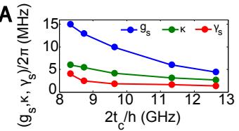</p>
<p>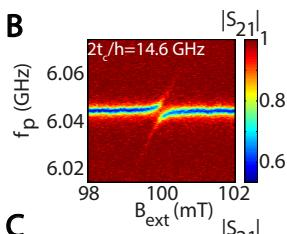</p>
<p>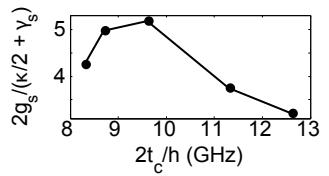<br/>
E<br/>
C</p>
<p>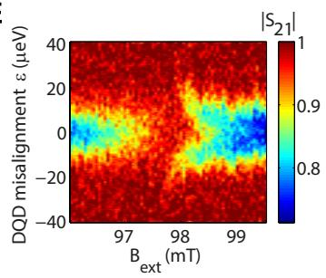</p>
<p>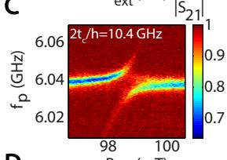<br/>
D</p>
<p>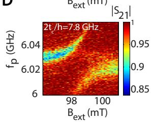<br/>
FIG. 4. Control of the spin-photon coupling. (A) The dependence on DQD tunnel coupling of <span class="katex"><span class="katex-html" aria-hidden="true"><span class="base"><span class="strut" style="height:0.625em;vertical-align:-0.1944em;"></span><span class="mord"><span class="mord mathnormal" style="margin-right:0.0359em;">g</span><span class="msupsub"><span class="vlist-t vlist-t2"><span class="vlist-r"><span class="vlist" style="height:0.1514em;"><span style="top:-2.55em;margin-left:-0.0359em;margin-right:0.05em;"><span class="pstrut" style="height:2.7em;"></span><span class="sizing reset-size6 size3 mtight"><span class="mord mtight"><span class="mord mathnormal mtight">s</span></span></span></span></span><span class="vlist-s">​</span></span><span class="vlist-r"><span class="vlist" style="height:0.15em;"><span></span></span></span></span></span></span><span class="mpunct">,</span><span class="mspace" style="margin-right:0.1667em;"></span><span class="mord mathnormal">κ</span><span class="mpunct">,</span><span class="mspace" style="margin-right:0.1667em;"></span><span class="mord"><span class="mord mathnormal" style="margin-right:0.0556em;">γ</span><span class="msupsub"><span class="vlist-t vlist-t2"><span class="vlist-r"><span class="vlist" style="height:0.1514em;"><span style="top:-2.55em;margin-left:-0.0556em;margin-right:0.05em;"><span class="pstrut" style="height:2.7em;"></span><span class="sizing reset-size6 size3 mtight"><span class="mord mtight"><span class="mord mathnormal mtight">s</span></span></span></span></span><span class="vlist-s">​</span></span><span class="vlist-r"><span class="vlist" style="height:0.15em;"><span></span></span></span></span></span></span></span></span></span> (upper panel) and the ratio of peak splitting to linewidth <span class="katex"><span class="katex-html" aria-hidden="true"><span class="base"><span class="strut" style="height:1em;vertical-align:-0.25em;"></span><span class="mord">2</span><span class="mord"><span class="mord mathnormal" style="margin-right:0.0359em;">g</span><span class="msupsub"><span class="vlist-t vlist-t2"><span class="vlist-r"><span class="vlist" style="height:0.1514em;"><span style="top:-2.55em;margin-left:-0.0359em;margin-right:0.05em;"><span class="pstrut" style="height:2.7em;"></span><span class="sizing reset-size6 size3 mtight"><span class="mord mtight"><span class="mord mathnormal mtight">s</span></span></span></span></span><span class="vlist-s">​</span></span><span class="vlist-r"><span class="vlist" style="height:0.15em;"><span></span></span></span></span></span></span><span class="mord">/</span><span class="mopen">(</span><span class="mord"><span class="mord mathnormal" style="margin-right:0.0556em;">γ</span><span class="msupsub"><span class="vlist-t vlist-t2"><span class="vlist-r"><span class="vlist" style="height:0.1514em;"><span style="top:-2.55em;margin-left:-0.0556em;margin-right:0.05em;"><span class="pstrut" style="height:2.7em;"></span><span class="sizing reset-size6 size3 mtight"><span class="mord mtight"><span class="mord mathnormal mtight">s</span></span></span></span></span><span class="vlist-s">​</span></span><span class="vlist-r"><span class="vlist" style="height:0.15em;"><span></span></span></span></span></span></span><span class="mspace" style="margin-right:0.2222em;"></span><span class="mbin">+</span><span class="mspace" style="margin-right:0.2222em;"></span></span><span class="base"><span class="strut" style="height:1em;vertical-align:-0.25em;"></span><span class="mord mathnormal">κ</span><span class="mord">/2</span><span class="mclose">)</span></span></span></span> (lower panel). While all three separate quantities increase with lower <span class="katex"><span class="katex-html" aria-hidden="true"><span class="base"><span class="strut" style="height:0.8389em;vertical-align:-0.1944em;"></span><span class="mord">2</span><span class="mord"><span class="mord mathnormal">t</span><span class="msupsub"><span class="vlist-t vlist-t2"><span class="vlist-r"><span class="vlist" style="height:0.1514em;"><span style="top:-2.55em;margin-left:0em;margin-right:0.05em;"><span class="pstrut" style="height:2.7em;"></span><span class="sizing reset-size6 size3 mtight"><span class="mord mtight"><span class="mord mathnormal mtight">c</span></span></span></span></span><span class="vlist-s">​</span></span><span class="vlist-r"><span class="vlist" style="height:0.15em;"><span></span></span></span></span></span></span><span class="mpunct">,</span></span></span></span> , the ratio <span class="katex"><span class="katex-html" aria-hidden="true"><span class="base"><span class="strut" style="height:1em;vertical-align:-0.25em;"></span><span class="mord">2</span><span class="mord"><span class="mord mathnormal" style="margin-right:0.0359em;">g</span><span class="msupsub"><span class="vlist-t vlist-t2"><span class="vlist-r"><span class="vlist" style="height:0.1514em;"><span style="top:-2.55em;margin-left:-0.0359em;margin-right:0.05em;"><span class="pstrut" style="height:2.7em;"></span><span class="sizing reset-size6 size3 mtight"><span class="mord mtight"><span class="mord mathnormal mtight">s</span></span></span></span></span><span class="vlist-s">​</span></span><span class="vlist-r"><span class="vlist" style="height:0.15em;"><span></span></span></span></span></span></span><span class="mord">/</span><span class="mopen">(</span><span class="mord"><span class="mord mathnormal" style="margin-right:0.0556em;">γ</span><span class="msupsub"><span class="vlist-t vlist-t2"><span class="vlist-r"><span class="vlist" style="height:0.1514em;"><span style="top:-2.55em;margin-left:-0.0556em;margin-right:0.05em;"><span class="pstrut" style="height:2.7em;"></span><span class="sizing reset-size6 size3 mtight"><span class="mord mtight"><span class="mord mathnormal mtight">s</span></span></span></span></span><span class="vlist-s">​</span></span><span class="vlist-r"><span class="vlist" style="height:0.15em;"><span></span></span></span></span></span></span><span class="mspace" style="margin-right:0.2222em;"></span><span class="mbin">+</span><span class="mspace" style="margin-right:0.2222em;"></span></span><span class="base"><span class="strut" style="height:1em;vertical-align:-0.25em;"></span><span class="mord mathnormal">κ</span><span class="mord">/2</span><span class="mclose">)</span></span></span></span> , which is the most relevant quantity, shows an optimum value around <span class="katex"><span class="katex-html" aria-hidden="true"><span class="base"><span class="strut" style="height:0.8889em;vertical-align:-0.1944em;"></span><span class="mord"><span class="mord mathnormal" style="margin-right:0.1076em;">f</span><span class="msupsub"><span class="vlist-t vlist-t2"><span class="vlist-r"><span class="vlist" style="height:0.1514em;"><span style="top:-2.55em;margin-left:-0.1076em;margin-right:0.05em;"><span class="pstrut" style="height:2.7em;"></span><span class="sizing reset-size6 size3 mtight"><span class="mord mtight"><span class="mord mathnormal mtight">c</span></span></span></span></span><span class="vlist-s">​</span></span><span class="vlist-r"><span class="vlist" style="height:0.15em;"><span></span></span></span></span></span></span><span class="mspace" style="margin-right:0.2778em;"></span><span class="mrel">=</span><span class="mspace" style="margin-right:0.2778em;"></span></span><span class="base"><span class="strut" style="height:0.6833em;"></span><span class="mord">10</span><span class="mspace nobreak"> </span><span class="mord"><span class="mord mathrm">GHz</span></span></span></span></span> . (B-D) Similar data to Fig. 2C for three diferent values of DQD tunnel coupling, as indicated. (E) Transmission as a function of <span class="katex"><span class="katex-html" aria-hidden="true"><span class="base"><span class="strut" style="height:0.8361em;vertical-align:-0.15em;"></span><span class="mord"><span class="mord"><span class="mord"><span class="mord boldsymbol" style="margin-right:0.0483em;">B</span><span class="msupsub"><span class="vlist-t vlist-t2"><span class="vlist-r"><span class="vlist" style="height:0.2806em;"><span style="top:-2.55em;margin-left:-0.0483em;margin-right:0.05em;"><span class="pstrut" style="height:2.7em;"></span><span class="sizing reset-size6 size3 mtight"><span class="mord mtight"><span class="mord mtight"><span class="mord mathrm mtight">ext</span></span></span></span></span></span><span class="vlist-s">​</span></span><span class="vlist-r"><span class="vlist" style="height:0.15em;"><span></span></span></span></span></span></span></span></span></span></span></span> and . Where the blue band is interrupted, the Zeeman splitting is resonant with the (dispersively shifted) resonator.</p>
<p>Finally, we study how close together the charge and spin sweet spots occur, where the relevant frequency (charge or spin) is to first order insensitive to the DQD</p>
<p>[1] A. Einstein, Ann. Phys. 17, 132-148 (1905).</p>
<p>[2] S. Haroche and J.-M. Raimond, Exploring the Quantum: Atoms, Cavities, and Photons (Oxford University Press, New York, 2006).</p>
<p>[3] R. J. Thompson, G. Rempe, and H. J. Kimble, Phys. Rev. Lett. 68 1132 (1992).</p>
<p>misalignment. The charge sweet spot is seen in Fig. 2B, at <span class="katex"><span class="katex-html" aria-hidden="true"><span class="base"><span class="strut" style="height:0.4306em;"></span><span class="mord mathnormal">ϵ</span><span class="mspace" style="margin-right:0.2778em;"></span><span class="mrel">=</span><span class="mspace" style="margin-right:0.2778em;"></span></span><span class="base"><span class="strut" style="height:0.6444em;"></span><span class="mord">0</span></span></span></span> and <span class="katex"><span class="katex-html" aria-hidden="true"><span class="base"><span class="strut" style="height:0.9805em;vertical-align:-0.2861em;"></span><span class="mord"><span class="mord mathnormal" style="margin-right:0.1076em;">f</span><span class="msupsub"><span class="vlist-t vlist-t2"><span class="vlist-r"><span class="vlist" style="height:0.1514em;"><span style="top:-2.55em;margin-left:-0.1076em;margin-right:0.05em;"><span class="pstrut" style="height:2.7em;"></span><span class="sizing reset-size6 size3 mtight"><span class="mord mtight"><span class="mord mathnormal mtight">p</span></span></span></span></span><span class="vlist-s">​</span></span><span class="vlist-r"><span class="vlist" style="height:0.2861em;"><span></span></span></span></span></span></span><span class="mspace" style="margin-right:0.2778em;"></span><span class="mrel">=</span><span class="mspace" style="margin-right:0.2778em;"></span></span><span class="base"><span class="strut" style="height:0.6833em;"></span><span class="mord">6.03</span><span class="mspace nobreak"> </span><span class="mord"><span class="mord mathrm">GHz</span></span></span></span></span> . If the micromagnets are placed symmetrically with respect to the DQD (as in Fig. 1D), the total magnetic field magnitude is symmetric around the center of the DQD. In this case, the spin splitting has no first order dependence on  at <span class="katex"><span class="katex-html" aria-hidden="true"><span class="base"><span class="strut" style="height:0.4306em;"></span><span class="mord mathnormal">ϵ</span><span class="mspace" style="margin-right:0.2778em;"></span><span class="mrel">=</span><span class="mspace" style="margin-right:0.2778em;"></span></span><span class="base"><span class="strut" style="height:0.6444em;"></span><span class="mord">0</span></span></span></span> and the charge and spin sweet spots coincide. For asymmetrically placed magnets, the spin sweet spot occurs away from <span class="katex"><span class="katex-html" aria-hidden="true"><span class="base"><span class="strut" style="height:0.4306em;"></span><span class="mord mathnormal">ϵ</span><span class="mspace" style="margin-right:0.2778em;"></span><span class="mrel">=</span><span class="mspace" style="margin-right:0.2778em;"></span></span><span class="base"><span class="strut" style="height:0.6444em;"></span><span class="mord">0</span></span></span></span> . To find the spin sweet spot, we vary  and <span class="katex"><span class="katex-html" aria-hidden="true"><span class="base"><span class="strut" style="height:0.8361em;vertical-align:-0.15em;"></span><span class="mord"><span class="mord"><span class="mord"><span class="mord boldsymbol" style="margin-right:0.0483em;">B</span></span></span><span class="msupsub"><span class="vlist-t vlist-t2"><span class="vlist-r"><span class="vlist" style="height:0.2806em;"><span style="top:-2.55em;margin-right:0.05em;"><span class="pstrut" style="height:2.7em;"></span><span class="sizing reset-size6 size3 mtight"><span class="mord mtight"><span class="mord mtight"><span class="mord mathrm mtight">ext</span></span></span></span></span></span><span class="vlist-s">​</span></span><span class="vlist-r"><span class="vlist" style="height:0.15em;"><span></span></span></span></span></span></span></span></span></span> at <span class="katex"><span class="katex-html" aria-hidden="true"><span class="base"><span class="strut" style="height:0.9805em;vertical-align:-0.2861em;"></span><span class="mord"><span class="mord mathnormal" style="margin-right:0.1076em;">f</span><span class="msupsub"><span class="vlist-t vlist-t2"><span class="vlist-r"><span class="vlist" style="height:0.1514em;"><span style="top:-2.55em;margin-left:-0.1076em;margin-right:0.05em;"><span class="pstrut" style="height:2.7em;"></span><span class="sizing reset-size6 size3 mtight"><span class="mord mtight"><span class="mord mathnormal mtight">p</span></span></span></span></span><span class="vlist-s">​</span></span><span class="vlist-r"><span class="vlist" style="height:0.2861em;"><span></span></span></span></span></span></span><span class="mspace" style="margin-right:0.2778em;"></span><span class="mrel">=</span><span class="mspace" style="margin-right:0.2778em;"></span></span><span class="base"><span class="strut" style="height:0.6444em;"></span><span class="mord">6.03</span></span></span></span> GHz (Fig. 4E). Throughout the blue band, <span class="katex"><span class="katex-html" aria-hidden="true"><span class="base"><span class="strut" style="height:0.9805em;vertical-align:-0.2861em;"></span><span class="mord"><span class="mord mathnormal" style="margin-right:0.1076em;">f</span><span class="msupsub"><span class="vlist-t vlist-t2"><span class="vlist-r"><span class="vlist" style="height:0.1514em;"><span style="top:-2.55em;margin-left:-0.1076em;margin-right:0.05em;"><span class="pstrut" style="height:2.7em;"></span><span class="sizing reset-size6 size3 mtight"><span class="mord mtight"><span class="mord mathnormal mtight">p</span></span></span></span></span><span class="vlist-s">​</span></span><span class="vlist-r"><span class="vlist" style="height:0.2861em;"><span></span></span></span></span></span></span></span></span></span> is resonant with the cavity frequency (in the dispersive charge-photon regime). Where the blue band is interrupted, the magnetic field brings the spin on resonance with the cavity photon, spin and photon hybridize, and the transmission is modified. As expected, we see that this spin-photon resonance condition slightly shifts in magnetic field as a function  [24]. The value of  where this shift has no first order dependence on  occurs close to <span class="katex"><span class="katex-html" aria-hidden="true"><span class="base"><span class="strut" style="height:0.4306em;"></span><span class="mord mathnormal">ϵ</span><span class="mspace" style="margin-right:0.2778em;"></span><span class="mrel">=</span><span class="mspace" style="margin-right:0.2778em;"></span></span><span class="base"><span class="strut" style="height:0.6444em;"></span><span class="mord">0</span></span></span></span> , i.e. the spin sweet spot lies close to the charge sweet spot.</p>
<p>The strong coupling of spin and photon not only opens up a new range of physics experiments but is also the crucial requirement for coupling spin qubits at a distance via a superconducting resonator. Given the large dimensions of the resonators compared to the double dot dimensions, multiple spin qubits can interact to and via the same resonator, enabling scalable networks of interconnected spin qubit registers [32]. Importantly, the spin-photon coupling can be switched on or of on nanosecond timescales using gate voltage pulses that control the double dot misalignment and tunnel coupling, facilitating on-demand coupling of one or more spins to a common resonator.</p>
<p>∗ These authors contributed equally to this work.</p>
<h2 id="acknowledgments">ACKNOWLEDGMENTS<a role="anchor" aria-hidden="true" tabindex="-1" data-no-popover="true" href="#acknowledgments" class="internal internal-link"><svg width="18" height="18" viewBox="0 0 24 24" fill="none" stroke="currentColor" stroke-width="2" stroke-linecap="round" stroke-linejoin="round"><path d="M10 13a5 5 0 0 0 7.54.54l3-3a5 5 0 0 0-7.07-7.07l-1.72 1.71"></path><path d="M14 11a5 5 0 0 0-7.54-.54l-3 3a5 5 0 0 0 7.07 7.07l1.71-1.71"></path></svg></a></h2>
<p>We thank J. Taylor, P. Scarlino, A. Yacoby, J. Kroll and members of the spin qubit team at QuTech for useful discussions, and L. Kouwenhoven and his team for access to NbTiN films. This research was undertaken thanks in part to funding from the European Research Council (ERC Synergy Quantum Computer Lab), the Dutch Foundation for Scientific Research (NWO through the Casimir Research School), Intel Corporation, the Canada First Research Excellence Fund and NSERC.</p>
<p>[4] M. Brune, F. Schmidt-Kaler, A. Maali, J. Dreyer, E. Hagley, J. M. Raimond, and S. Haroche, Phys. Rev. Lett. 76, 1800 (1996).</p>
<p>[5] A. Wallraf, D. I. Schuster, A. Blais, L. Frunzio, R.-S. Huang, J. Majer, S. Kumar, S. M. Girvin, and R. J. Schoelkopf, Nature 431, 162 (2004).</p>
<p>[6] I. Chiorescu, P. Bertet, K. Semba, Y. Nakamura, C. J. P. M. Harmans, and J. E. Mooij, Nature 431, 159 (2004).</p>
<p>[7] J. P. Reithmaier, G. Sek, A. Lofler, C. Hofmann, S. Kuhn, S. Reitzenstein, L. V. Keldysh, V. D. Kulakovskii, T. L. Reinecke, and A. Forchel, Nature 432, 197 (2004).</p>
<p>[8] T. Yoshie, A. Scherer, J. Hendrickson, G. Khitrova, H. M. Gibbs, G. Rupper, C. Ell, O. B. Shchekin, and D. G. Deppe, Nature 432, 200 (2004).</p>
<p>[9] D. Shulman, O. E. Dial, S. P. Harvey, H. Bluhm, V. Umansky, and A. Yacoby, Science 336, 202-205 (2012).</p>
<p>[10] M. Veldhorst, C. H. Yang, J. C. C. Hwang, W. Huang, J. P. Dehollain, J. T. Muhonen, S. Simmons, A. Laucht, F. E. Hudson, K. M. Itoh, A. Morello, and A. S. Dzurak, Nature 526, 410 (2015).</p>
<p>[11] T. F. Watson, S. G. J. Philips, E. Kawakami, D. R. Ward, P. Scarlino, M. Veldhorst, D. E. Savage, M. G. Lagally, Mark Friesen, S. N. Coppersmith, M. A. Eriksson, L. M. K. Vandersypen, arXiv:1708.04214.</p>
<p>[12] D. M. Zajac, A. J. Sigillito, M. Russ, F. Borjans, J. M. Taylor, G. Burkard, J. R. Petta, arXiv:1708.03530.</p>
<p>[13] X. Mi, J. V. Cady, D. M. Zajac, P. W. Deelman, and J. R. Petta, Science 335, 156 (2017).</p>
<p>[14] A. Stockklauser, P. Scarlino, J. V. Koski, S. Gasparainetti, C. K. Andersen, C. Reichl, W. Wegscheider, T. Ihn, K. Ennslin, and A. Wallraf, Phys. Rev. X 7, 011030 (2017).</p>
<p>[15] L. E. Bruhat, T. Cubaynes, J.J. Viennot, M. C. Dartiailh, M.M. Desjardins, A. Cottet, T. Kontos, arXiv:1612.05214.</p>
<p>[16] X. Mi, M. Benito, S. Putz, D. M. Zajac, J. M. Taylor, G. Burkard, J. R. Petta, arXiv:1710.03265.</p>
<p>[17] P. Haikka, Y. Kubo, A. Bienfait, P. Bertet, K. Mølmer, Phys. Rev. A 95 022306 (2017).</p>
<p>[18] L. Childress, A. S. Sørensen, and M. D. Lukin, Phys. Rev. A 69, 042302 (2004).</p>
<p>[19] G. Burkard and A. Imamoglu, Phys. Rev. B 74, 041307 (2006).</p>
<p>[20] M. Trif, V. N. Golovach, and D. Loss, Phys. Rev. B 77, 045434 (2008).</p>
<p>[21] A. Cottet and T. Kontos, Phys. Rev. Lett. 105, 160502 (2010).</p>
<p>[22] M. Pioro-Ladri`ere, Y. Tokura, T. Obata, T. Kubo, S. Tarucha, Appl. Phys. Lett. 90, 024105 (2007).</p>
<p>[23] E. Kawakami, P. Scarlino, D. R. Ward, F. R. Braakman, D. E. Savage, M. G. Lagally, Mark Friesen, S. N. Coppersmith, M. A. Eriksson, L. M. K. Vandersypen, Nat. Nanotechnol. 9, 666 (2014).</p>
<p>[24] J. J. Viennot, M. C. Dartiailh, A. Cottet, T. Kontos, Science 349, 408 (2015).</p>
<p>[25] X. Hu, Y.-X. Liu, and F. Nori, Phys. Rev. B 86, 035314 (2012).</p>
<p>[26] F. Beaudoin, D. Lachance-Quirion, W. A. Coish, M. Pioro-Ladri`ere, Nanotechnology 27, 464003 (2016).</p>
<p>[27] M. Benito, X. Mi, J. M. Taylor, J. R. Petta, Guido Burkard, arXiv:1710.02508.</p>
<p>[28] N. Samkharadze, A. Bruno, P. Scarlino, G. Zheng, D. P. DiVincenzo, L. DiCarlo, L. M. K. Vandersypen, Phys. Rev. Applied 5, 044004 (2016).</p>
<p>[29] T. Hayashi, T. Fujisawa, H. D. Cheong, Y. H. Jeong, Y. Hirayama, Phys. Rev. Lett. 91, 226804 (2003).</p>
<p>[30] K. D. Petersson, L. W. McFaul, M. D. Schroer, M. Jung, J. M. Taylor, A. A. Houck, J. R. Petta, Nature 490, 380 (2012).</p>
<p>[31] T. Frey, P. J. Leek, M. Beck, A. Blais, T. Ihn, K. Ensslin, and A. Wallraf, Phys. Rev. Lett. 108, 046807 (2012).</p>
<p>[32] L. M. K. Vandersypen, H. Bluhm, J. S. Clarke, A. S. Dzurak, R. Ishihara, A. Morello, D. J. Reilly, L. R. Schreiber and M. Veldhorst, npj Q. Info. 3, 34 (2017).</p></div></article><hr/><div class="page-footer"></div></div><div class="right sidebar"><div class="graph"><h3>关系图谱</h3><div class="graph-outer"><div class="graph-container" data-cfg="{&quot;drag&quot;:true,&quot;zoom&quot;:true,&quot;depth&quot;:1,&quot;scale&quot;:1.1,&quot;repelForce&quot;:0.5,&quot;centerForce&quot;:0.3,&quot;linkDistance&quot;:30,&quot;fontSize&quot;:0.6,&quot;opacityScale&quot;:1,&quot;showTags&quot;:true,&quot;removeTags&quot;:[],&quot;focusOnHover&quot;:false,&quot;enableRadial&quot;:false}"></div><button class="global-graph-icon" aria-label="Global Graph"><svg version="1.1" xmlns="http://www.w3.org/2000/svg" xmlns:xlink="http://www.w3.org/1999/xlink" x="0px" y="0px" viewBox="0 0 55 55" fill="currentColor" xml:space="preserve"><path d="M49,0c-3.309,0-6,2.691-6,6c0,1.035,0.263,2.009,0.726,2.86l-9.829,9.829C32.542,17.634,30.846,17,29,17
                s-3.542,0.634-4.898,1.688l-7.669-7.669C16.785,10.424,17,9.74,17,9c0-2.206-1.794-4-4-4S9,6.794,9,9s1.794,4,4,4
                c0.74,0,1.424-0.215,2.019-0.567l7.669,7.669C21.634,21.458,21,23.154,21,25s0.634,3.542,1.688,4.897L10.024,42.562
                C8.958,41.595,7.549,41,6,41c-3.309,0-6,2.691-6,6s2.691,6,6,6s6-2.691,6-6c0-1.035-0.263-2.009-0.726-2.86l12.829-12.829
                c1.106,0.86,2.44,1.436,3.898,1.619v10.16c-2.833,0.478-5,2.942-5,5.91c0,3.309,2.691,6,6,6s6-2.691,6-6c0-2.967-2.167-5.431-5-5.91
                v-10.16c1.458-0.183,2.792-0.759,3.898-1.619l7.669,7.669C41.215,39.576,41,40.26,41,41c0,2.206,1.794,4,4,4s4-1.794,4-4
                s-1.794-4-4-4c-0.74,0-1.424,0.215-2.019,0.567l-7.669-7.669C36.366,28.542,37,26.846,37,25s-0.634-3.542-1.688-4.897l9.665-9.665
                C46.042,11.405,47.451,12,49,12c3.309,0,6-2.691,6-6S52.309,0,49,0z M11,9c0-1.103,0.897-2,2-2s2,0.897,2,2s-0.897,2-2,2
                S11,10.103,11,9z M6,51c-2.206,0-4-1.794-4-4s1.794-4,4-4s4,1.794,4,4S8.206,51,6,51z M33,49c0,2.206-1.794,4-4,4s-4-1.794-4-4
                s1.794-4,4-4S33,46.794,33,49z M29,31c-3.309,0-6-2.691-6-6s2.691-6,6-6s6,2.691,6,6S32.309,31,29,31z M47,41c0,1.103-0.897,2-2,2
                s-2-0.897-2-2s0.897-2,2-2S47,39.897,47,41z M49,10c-2.206,0-4-1.794-4-4s1.794-4,4-4s4,1.794,4,4S51.206,10,49,10z"></path></svg></button></div><div class="global-graph-outer"><div class="global-graph-container" data-cfg="{&quot;drag&quot;:true,&quot;zoom&quot;:true,&quot;depth&quot;:-1,&quot;scale&quot;:0.9,&quot;repelForce&quot;:0.5,&quot;centerForce&quot;:0.2,&quot;linkDistance&quot;:30,&quot;fontSize&quot;:0.6,&quot;opacityScale&quot;:1,&quot;showTags&quot;:true,&quot;removeTags&quot;:[],&quot;focusOnHover&quot;:true,&quot;enableRadial&quot;:true}"></div></div></div><div class="toc"><button type="button" class="toc-header" aria-controls="toc-96" aria-expanded="true"><h3>目录</h3><svg xmlns="http://www.w3.org/2000/svg" width="24" height="24" viewBox="0 0 24 24" fill="none" stroke="currentColor" stroke-width="2" stroke-linecap="round" stroke-linejoin="round" class="fold"><polyline points="6 9 12 15 18 9"></polyline></svg></button><ul id="list-0" class="toc-content overflow"><li class="depth-0"><a href="#全文" data-for="全文">全文</a></li><li class="depth-0"><a href="#acknowledgments" data-for="acknowledgments">ACKNOWLEDGMENTS</a></li><li class="overflow-end"></li></ul></div><div class="backlinks"><h3>反向链接</h3><ul id="list-0" class="overflow"><li><a href="../circuit-qed/charge-photon-coupling" class="internal">电荷–光子耦合</a></li><li><a href="../circuit-qed/spin-photon-coupling" class="internal">自旋–光子耦合</a></li><li><a href="../qubit-control/two-qubit-gate" class="internal">两比特门</a></li><li><a href="../readout-measurement/dispersive-readout" class="internal">色散读出</a></li><li><a href="../readout-measurement/gate-based-sensing" class="internal">栅极射频传感</a></li><li class="overflow-end"></li></ul></div></div><footer class><p>Created with <a href="https://quartz.jzhao.xyz/">Quartz v5.0.0</a> © 2026</p><ul><li><a href="https://chenzhaoyun.com">主站</a></li><li><a href="https://wiki.chenzhaoyun.com">Wiki 门户</a></li><li><a href="https://tutorial.chenzhaoyun.com">教程门户</a></li></ul></footer></div></div></body><script src="../static/resource-after-e13fffa1.js" type="application/javascript" data-persist="true"></script><script src="../static/resource-after-8b336f9a.js" type="application/javascript" data-persist="true"></script><script src="../static/resource-after-baba652b.js" type="application/javascript" data-persist="true"></script><script src="../static/resource-after-5eb75950.js" type="module" data-persist="true"></script><script src="../static/katex/copy-tex.min.js" type="application/javascript" data-persist="true"></script><script src="../postscript-7fa3ee3a.js" type="module" data-persist="true"></script></html>